freiesMagazin Mai 2012
(ISSN 1867-7991)
Topthemen dieser Ausgabe
Selbstgebacken 3: makeDas Bauen eines Kernels und das Aktualisieren der Quellen ist keine große Zauberkunst und, sofern man keine besonderen Extras haben möchte, mit ein paar make-Kommandos recht schnell erledigt, wobei make den Löwenanteil der Arbeit verrichtet. Es bekommt gesagt, was man möchte, den Rest erledigt es dann von alleine. Der Artikel soll das Geheimnis von make etwas lüften. (weiterlesen)
Kollaboratives Schreiben mit LaTeX
Ob im wissenschaftlichen oder privaten Bereich: Möchte man die volle Kontrolle über das Aussehen seiner erstellten Dokumente behalten, führt oft kein Weg an LaTeX vorbei. Die Standard TeX-Distribution zeigt jedoch ein paar Restriktionen auf. Sowohl die Online-Verfügbarkeit des Dokuments von jedem Ort aus sowie der kollaborative Ansatz, dass mehrere Personen zeitgleich an einem Dokument arbeiten können, ist mit den Standardmitteln der Desktopinstallation nicht zu erreichen. Die im Artikel vorgestellten Lösungen versuchen, die gewünschten Zusatzfunktionen bereitzustellen. (weiterlesen)
Astah – Kurzvorstellung des UML-Programms
Die Februar-Ausgabe von freiesMagazin enthielt einen kleinen Test diverser UML-Programme. Dabei wurde aber das UML- und Mindmap-Programm Astah übersehen. In dem Artikel soll gezeigt werden, ob das Programm mit den zuvor getesteten mithalten kann. (weiterlesen)
Zum Index
Inhalt
Linux allgemeinSelbstgebacken 3: make
Der April im Kernelrückblick
Anleitungen
Objektorientierte Programmierung: Teil 3
Dokumentenmanagement mit LetoDMS – Einrichten der Volltextsuche
Software
Kollaboratives Schreiben mit LaTeX
Tine 2.0 – Installation und Konfiguration
Astah – Kurzvorstellung des UML-Programms
Community
Rezension: PyQt und PySide
Rezension: C++11 programmieren
Rezension: Java 7 – Mehr als eine Insel
Magazin
Editorial
Ende des fünften Programmierwettbewerbs
Leserbriefe
Veranstaltungen
Vorschau
Konventionen
Impressum
Zum Index
Editorial
Fünfter Programmierwettbewerb beendet
Der am 1. März 2012 gestartete fünfte freiesMagazin-Programmierwettbewerb [1] ging offiziell am 15. April 2012 zu Ende. Thema war die Analyse eines Textes, das Zählen von Worten und die Ausgabe als Wortwolke. Die eingereichten Programme wurden auf Herz und Nieren geprüft, sodass die Bewertung erst Anfang Mai vorlag [2]. Es hatten sechs Programmierwillige ein Programm eingereicht, wobei einer sein Programm während der Bewertungsphase zurückzog. Von den restlichen fünf Programmen waren leider drei etwas fehlerhaft, sodass wir keines von ihnen auf den dritten Platz setzen wollten. Daher gibt es nur zwei Gewinner. Der Wettbewerb hat auch gezeigt, dass eine Bewertung aufgrund von Eigenschaften wesentlich schwieriger ist als wenn am Ende des Wettbewerbs automatisch eine Punktzahl herausfällt, die genau angibt, welche Platzierung ein Programm erreicht. Das ist auch der Grund, wieso der nächste Wettbewerb wieder ein spieltheoretisches Problem mit einer klaren Punktzahl am Ende angehen wird. Voraussichtlicher Start des sechsten freiesMagazin-Programmierwettbewerbs ist Anfang Oktober.Abschied
Im April hieß es Abschied nehmen von einem langjährigen Teammitglied. Thorsten Schmidt, seit 2007 als Autor, danach als Korrektor und letztendlich seit drei Jahren als Redaktionsmitglied tätig, musste aus privaten und zeitlichen Gründen das Team verlassen. Wir wollen Thorsten an dieser Stelle für seine langjährige Unterstützung danken und ihm für die Zukunft alles Gute wünschen. Das Magazin existiert aber auch mit nur drei Redaktionsmitgliedern weiter, auch wenn die Maiausgabe etwas dünner ist als die restlichen Ausgaben. Nach wie vor benötigen wir immer neue Artikel, um das Magazin mit Inhalt zu füllen. Wenn Sie also eine Idee zu einem Artikel haben, schreiben Sie uns unter[1] http://www.freiesmagazin.de/20120301-fuenfter-programmierwettbewerb-gestartet
[2] http://www.freiesmagazin.de/20120505-gewinner-des-fuenften-programmierwettbewerbs
Das Editorial kommentieren
Zum Index
Selbstgebacken 3: make
von Mathias Menzer Das Bauen eines Kernels und das Aktualisieren der Quellen ist keine große Zauberkunst und, sofern man keine besonderen Extras haben möchte, mit ein paar make-Kommandos recht schnell erledigt, wobei make den Löwenanteil der Arbeit verrichtet. Es bekommt gesagt, was man möchte, den Rest erledigt es dann von alleine. Der Artikel soll das Geheimnis von make etwas lüften.Was ist make?
make ist ein Werkzeug zum Erstellen von Programmen aus dem Quelltext. Es gibt verschiedene Implementierungen, zum Beispiel pmake unter BSD und „GNU make“, das bei Linux zur Anwendung kommt. GNU make entstammt dem GNU-Projekt [1] und kommt zusammen mit der GNU Compiler Collection (gcc) und der GNU C Library (glibc) beim Bau des Linux-Kernels zum Einsatz. Unter anderem darauf stützt sich der Initiator des GNU-Projekts, Richard Stallman, wenn er darauf besteht, dass die korrekte Bezeichnung GNU/Linux sei [2]. Kurz beschrieben funktioniert make so, dass es beim Aufruf ein Kommando erhält, was es tun soll. Da die Entwickler von make nun aber nicht jede Software und ihre speziellen Anforderungen kennen können, haben Sie make als eine Art vollautomatische Werkzeugkiste aufgebaut, die der zu kompilierenden Software dann quasi die Aufbauanleitung entnimmt. Diese Anleitung heißt Makefile und enthält die vom Entwickler vorgesehenen Anweisungen nebst den notwendigen Hinweisen für make, was zu tun ist. Mancher Kunde skandinavischer Möbelhäuser würde sich darüber freuen, wenn ein „make Schrank Türen-Anschlag-Links“ den Beipackzettel einlesen, das Zubehör auf Vollständigkeit prüfen, alles Relevante heraussuchen, die Anweisungen korrekt interpretieren und auch gleich den Aufbau vornehmen würde. Die verschiedenen Befehle, die make entgegennehmen kann, werden „Targets“ genannt. Wofür Targets letztlich definiert werden, bleibt den Software-Entwicklern überlassen. Neben dem eigentlichen Kompilieren werden Targets auch für das Konfigurieren (z. B. make config) oder das Aufräumen der Quellen nach einem Kompilierungsvorgang (z. B. make clean) verwendet.Wozu braucht der Linux-Kernel make?
Beim Linux-Kernel handelt es sich um ein komplexes Miteinander von Bibliotheken, Komponenten und Modulen, die aufeinander aufbauen und so ein verflochtenes Netzwerk aus Abhängigkeiten erzeugen. Berücksichtigt man die Größe des Projekts, so wird schnell klar, dass die Auflösung dieser Abhängigkeiten bei der Kernelkompilierung eine Lebensaufgabe wäre, würde make einem nicht diese Arbeit abnehmen. Angefangen von dem zentralen Makefile des Linux-Kernels, das im Wurzelverzeichnis des Quellcode-Verzeichnisbaums zu finden ist, arbeitet sich make entsprechend der Konfigurationsdatei .config durch den Baum der einzelnen Subsysteme und bindet dann entsprechend der dort zu findenden Makefiles wiederum andere Komponenten ein oder kompiliert sie, bis es sie zum Schluss im System ablegt und zum Beispiel beim Bootloader registriert. Und auch schon bei der Erstellung der Konfigurationsdatei kann einem make behilflich sein und spart dabei die Tipparbeit von bis zu 5000 Zeilen Text. Mehr als viele andere Projekte ist der Linux-Kernel also auf make angewiesen.Welche Targets gibt es?
Für den Linux-Kernel kennt make mehr als 60 Targets (Stand Linux 3.3). Nicht alle sind immer sinnvoll zu nutzen, da zum Beispiel auch Targets für die Erstellung von RPM-Paketen mit dem fertig kompilierten Kernel bestehen, die auf einem Debian-System nur wenig Sinn ergeben. Dennoch ist ein Überblick über die gebräuchlichsten Targets von Vorteil, wenn man mal von fertigen Kernel-Rezepten abweichen möchte.Konfigurieren
Die meisten Targets dienen der Erstellung einer gültigen .config-Datei. Die einfachste Variante, make config, fragt auf der Kommandozeile jede mögliche Einstellung vom Anwender ab, wobei die Standard-Einstellung immer vorausgewählt ist und nur mit „Enter“ bestätigt werden muss. Für die annähernd 5000 Abfragen sollte man allerdings viel Zeit mitbringen. Die Variante make oldconfig wurde in den vorangegangenen Teilen schon genutzt, sie übernimmt eine bereits vorliegende .config-Datei und legt dem Nutzer nur noch die dort nicht festgelegten Optionen zur Entscheidung vor. make defconfig verzichtet dagegen ganz auf irgendwelche Abfragen und übernimmt stattdessen die von den jeweiligen Entwicklern vorgesehenen Standard-Einstellungen in die Konfigura- tionsdatei, was Zeit und Arbeit spart, die man gegebenenfalls anschließend investieren muss. Hierzu wären grafische Werkzeuge hilfreich, die ebenfalls über verschiedene Targets aufgerufen werden können. Die einfachste Version davon, die auch auf einem System ohne grafische Benutzeroberfläche verwendet werden kann, sind die auf ncurses [3] basierenden make menuconfig und make nconfig (erforderliches Paket: ncurses-devel). Alle Einstellmöglichkeiten für den Linux-Kernel finden sich hier in einer Baumstruktur wieder. Der Natur einer terminalbasierten Benutzeroberfläche ist es geschuldet, dass sich die Übersichtlichkeit hier in Grenzen hält, man muss schon in etwa wissen, wo sich eine bestimmte Einstellung finden lässt, wenn man auf langes Suchen verzichten möchte. Apropos Suche: Beide Tools bieten eine Möglichkeit, nach Optionen zu suchen, was bisweilen einiges an Zeit ersparen kann. 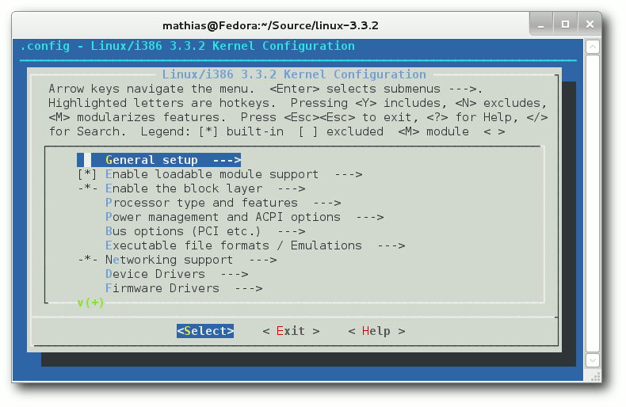menuconfig präsentiert sich aufgeräumt.
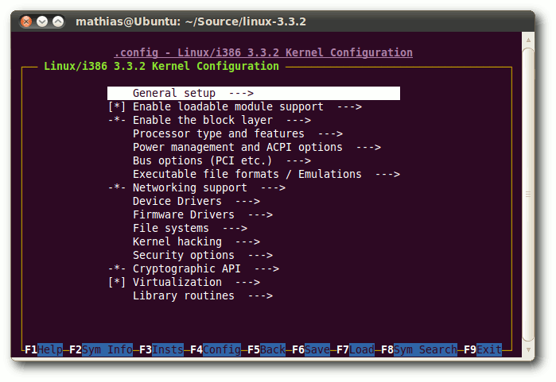
Die Belegung der F-Tasten ist in nconfig immer sichtbar.
Etwas übersichtlicher erscheinen dennoch make xconfig, das sich mit seiner QT-Oberfläche für KDE-Umgebungen anbietet (erforderliches Paket: qt), und das GTK+-basierte [4] gconfig (erforderliche Pakete: gtk+-2.0, glib-2.0 und libglade-2.0). Beide zeigen die gleiche Baumstruktur wie auch die ncurses-Tools, jedoch sorgen die ausklappbaren Unterpunkte für mehr Übersichtlichkeit und erleichtern die manuelle Nachbearbeitung der .config-Datei ungemein. 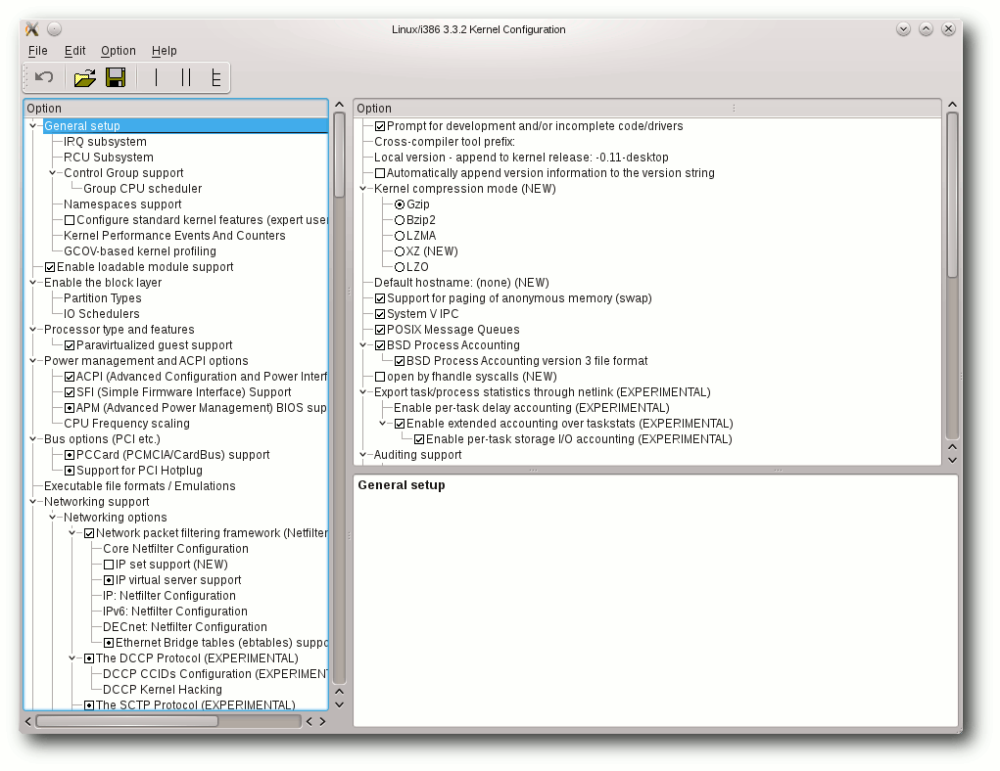
Die grafische Oberfläche von xconfig ist die bei weitem übersichtlichste.
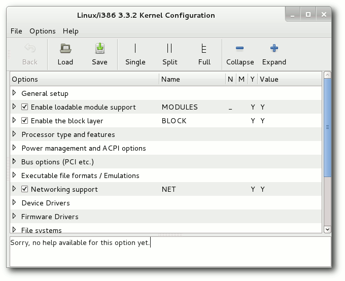
gconfig ist nicht ganz so übersichtlich wie das Qt-Pendant, kommt aber besser mit kleinen Bildschirmen klar.
Mit Vorsicht zu genießen ist das Target localmodconfig: Hier wird eine vorliegende Konfiguration genommen und alle Module, die gerade nicht geladen sind, deaktiviert. Dabei wird der Kernel zwar recht schlank, jedoch müssen Komponenten für Hardware, die gerade nicht aktiv war, anschließend wieder manuell in der Konfigurationen aktiviert werden, um sie nutzen zu können. localyesconfig geht noch einen Schritt weiter und sorgt dafür, dass die entsprechenden Treiber direkt in den Kernel kompiliert werden, sie müssen also nicht bei Bedarf nachgeladen werden, blähen den Kernel jedoch auf. Dem entgegen steht allmodconfig, das so viele Treiber wie möglich versucht aus dem Kernel auszulagern und als Module einbindet. Es existieren noch weitere Targets, die nicht unbedingt täglich von Nutzen sind. Während man eine Konfiguration, bei der alle Optionen ein- oder ausgeschaltet sind, schon mal als Grundlage für eine manuelle Nachbearbeitung erzeugen kann, dürfte randconfig eher etwas für Nerds sein, die zu viel Zeit übrig haben, denn es beantwortet alle Abfragen zu den Optionen mit Zufallswerten. Hier eine Übersicht der Targets zum Konfigurieren des Kernels:
- config
- alle Einstellungen werden in der Kommandozeile abgefragt
- defconfig
- Kernel-Standardkonfiguration entsprechend der jeweiligen Architektur
- oldconfig
- vorliegende Konfiguration wird übernommen, neue Funktionen/Treiber werden in der Kommandozeile interaktiv abgefragt
- localmodconfig
- vorliegende Konfiguration wird übernommen, nicht aktive Module werden deaktiviert
- localyesconfig
- wie localmodconfig, aber die Module werden in den Kernel fest eingebunden
- allnoconfig
- neue Konfiguration, alle Abfragen werden mit „Nein“ beantwortet
- allyesconfig
- neue Konfiguration, alle Abfragen werden mit „Ja“ beantwortet
- allmodconfig
- neue Konfiguration, es werden Treiber als Modul konfiguriert
- alldefconfig
- neue Konfiguration, alle Komponenten mit Standard-Optionen
- randconfig
- neue Konfiguration, Optionen werden zufällig gesetzt
- menuconfig
- terminalbasierte Oberfläche, basierend auf ncurses
- nconfig
- terminalbasierte Oberfläche, basierend auf ncurses
- xconfig
- grafische Oberfläche, basierend auf Qt
- gconfig
- grafische Oberfläche, basierend auf GTK+
Kompilieren und Installieren
Wird make ohne Target aufgerufen, so entspricht dies make all oder make vmlinux bzImage modules. Das bedeutet, es werden der eigentliche Linux-Kernel (vmlinux), ein komprimiertes Kernel-Abbild (bzImage) und die Module (modules) gebaut. vmlinux wird nicht mehr oft verwendet, da aufgrund des Umfangs der Griff zum komprimierten Kernel-Abbild empfohlen wird. Das bzImage wird beim Installieren übrigens in vmlinuz umbenannt und findet sich unter diesem Namen im /boot-Verzeichnis. Was das Erstellen der Module anbetrifft, so kann man sich dies unter Umständen sparen, wenn alle benötigten Treiber statisch in den Kernel hineinkompiliert werden, z. B. beim Einsatz von localyesconfig. Installiert wird der Kernel natürlich mit make install, die Module mit make modules_install. Letzteres berücksichtigt den Modul-Pfad, wie ihn die jeweilige Distribution vorgibt (z. B. /lib/modules in Ubuntu). Aber auch wie die eigentlich Installation abläuft ist distributionsspezifisch, denn hier kommt das Skript /sbin/installkernel zum Einsatz, das den Kernelquellen nicht beiliegt, sondern vom Distributor entsprechend bereitgestellt wird. Hier eine Übersicht der Targets zum Kompilieren und Installieren des Kernels:- vmlinux
- erstellt den Kernel
- bzImage
- erstellt ein komprimiertes Kernel-Abbild
- modules
- erstellt alle konfigurierten Module
- install
- installiert den Kernel und registriert ihn beim Bootloader
- modules_install
- installiert die Module in den Modul-Pfad des Systems
Weitere Werkzeuge
Ist man irgendwo mit Arbeiten fertig, so räumt man in der Regel auf und fegt einmal durch. Auch beim Kernelbau sollte man das machen, um beim Anwenden künftiger Patches keine Überraschung zu erleben. Hier hilft make clean ungemein, denn es entfernt die Überreste, die beim Kompilier-Vorgang angefallen sind. Die .config-Datei bleibt jedoch erhalten. Einen Überblick über neue Optionen erhält man mit dem Target listnewconfig. Es stellt die Unterschiede zwischen einer vorliegenden .config und den verfügbaren Einstellungen des aktuellen Kernels dar. Und sollte man vergessen haben, was der für eine Versionsnummer hat, so liefert make kernelversion die Antwort. Hier eine (unvollständige) Übersicht anderer Targets:- kernelversion
- zeigt die Versionsnummer aus dem Makefile
- listnewconfig
- listet hinzugekommene Optionen auf
- help
- listet alle Targets
- clean
- entfernt die beim Konfigurieren und Kompilieren erzeugten Dateien
- mrproper
- wie clean, entfernt jedoch auch die Konfiguration und Backup-Dateien
- distclean
- entfernt alle Dateien, die nicht zum Quellcode gehören
Fazit
In diesem Artikel wurden längst nicht alle Targets von make angesprochen. Eine vollständige Übersicht liefert make help im Wurzelverzeichnis des entpackten Linux-Quellcodes. Der Blick über den Tellerrand lohnt sich in jedem Fall, wenn man seinen Linux-Kernel selbst baut. Auch wenn man sich letztlich meist mit nur wenigen der Möglichkeiten, die make hier bietet durchs Leben kompiliert, bietet die Vielzahl der Targets auch Lösungen für ausgefallene Aufgaben – und wenn es nur der langweilige Sonntagnachmittag ist, der mit make randconfig sehr interessant zu werden verspricht.| Paketübersicht nach Distributionen | ||
| Debian/Ubuntu | SuSE | Fedora |
| libncurses5-dev | ncurses-devel | ncurses-devel |
| libqt4-dev | libqt4-devel | qt4-devel |
| libgtk2.0-dev | gtk2-devel | gtk2-devel |
| libglib2.0-dev | gtk2-devel | gtk2-devel |
| libglade2-dev | libglade2-devel | libglade2-devel |
[1] http://www.gnu.org/
[2] https://de.wikipedia.org/wiki/GNU/Linux-Namensstreit
[3] https://de.wikipedia.org/wiki/Ncurses
[4] https://de.wikipedia.org/wiki/GTK+
| Autoreninformation |
| Mathias Menzer (Webseite) ist zur Kernelkompilierung auf „make“ angewiesen. Ein Überblick über dessen Möglichkeiten ist da ganz nützlich. |
Diesen Artikel kommentieren
Zum Index
Der April im Kernelrückblick
von Mathias Menzer Basis aller Distributionen ist der Linux-Kernel, der fortwährend weiterentwickelt wird. Welche Geräte in einem halben Jahr unterstützt werden und welche Funktionen neu hinzukommen, erfährt man, wenn man den aktuellen Entwickler-Kernel im Auge behält. Fast wäre es ein Aprilscherz geworden, aber Linux 3.4-rc1 [1] erschien auch nach unserer Zeit noch am 31. März und signalisierte damit, dass die Zeit zum Einreichen von Änderungen abgelaufen ist. Unter den Funktionen, die aufgenommen wurden, ist eine zusätzliche ABI [2] für die Ausführung von 32-Bit-Programmen auf 64-Bit-Systemen. Die neue x32-ABI erfordert extra für sie kompilierte Anwendungen, diese sollen dann jedoch schneller laufen als mit i386 oder x86_64. Der Nouveau-Treiber unterstützt nun auch die neuen Nvidia-Karten mit Kepler-Chip, was dem Einsatz des Entwicklers Ben Skegg zu verdanken ist. Die zweite Vorabversion [3] lieferte neben den üblichen ersten Fehlerkorrekturen noch ein paar Nachzügler – Pull Requests, die zwar rechtzeitig eingereicht, aber zum -rc1 noch nicht berücksichtigt wurden. Dazu zählen HSI (High Speed Serial Interface), eine DMA-Puffer-Schnittstelle für DRM namens „PRIME“ und ein DMA-Mapping-Framework. Zu Linux 3.4-rc3 [4] hin ging die Zahl der Änderungen erwartungsgemäß zurück. Größere Änderungen waren hier der Treiber für die Kyro-Grafik-Chipsätze von STMicroelectronics, der bislang leider nicht mit x86_64-Systemen zurechtkam, und Fehlerkorrekturen an dem SSD-Treiber mtip32xx für Micron-SSDs. Auf den ersten Blick schien -rc4 [5] ein Rückschritt zu sein, schoss doch die Zahl der geänderten Codezeilen erheblich in die Höhe. Der Grund lag hier jedoch darin, dass das Bootlogo der Architektur für Motorolas 68000er Serie von Mikroprozessoren von einem Bereich in einen anderen verschoben wurde und den Diff damit erheblich aufblähte, auch wenn er sonst nur kleinere Korrekturen zu bieten hatte. Wer nun auf eine weitere Beruhigung gehofft hatte, wurde von Linux 3.4-rc5 [6] nicht wirklich enttäuscht. Zwar war diese Entwicklerversion wieder etwas größer, doch die meisten Änderungen liegen in der Kategorie Fehlerkorrektur und fallen recht kompakt aus. Als Longtime-Kernel werden einige ausgewählte Kernel-Versionen über zwei Jahre hinweg gepflegt, während die regulären produktiven Kernel nur bis zur Veröffentlichung ihres Nachfolgers mit Updates ausgestattet werden. Der jüngste Spross ist nun Linux 3.2, der künftig von Debian-Entwickler Ben Hutchings betreut werden wird [7]. Debian nutzt diese Version für das kommende Debian-Release, aber auch Ubuntu wird hiervon Nutzen ziehen, setzt doch die gerade veröffentlichte Version 12.04 Linux 3.2 ein. Dagegen wird die Pflege eines anderen „Langzeit-Kernels“ nun eingestellt [8]. Willy Tarreau, der bislang die Kernel-Reihe 2.4 betreut hat, verkündete nun dass es keine weiteren Releases mehr geben werde [9]. Diese Reihe wird nun seit 2001 gepflegt, auch wenn seit Ende 2010 keine Veröffentlichung mehr stattfand. Damit ist 2.4 die bislang am längsten gepflegte Reihe, wenn man berücksichtigt, dass bereits 2003 der erste 2.6er Kernel erschien - ein echter Langzeit-Kernel. Links[1] https://lkml.org/lkml/2012/3/31/214
[2] https://de.wikipedia.org/wiki/Binärschnittstelle
[3] https://lkml.org/lkml/2012/4/7/123
[4] https://lkml.org/lkml/2012/4/15/179
[5] https://lkml.org/lkml/2012/4/21/180
[6] ttps://lkml.org/lkml/2012/4/29/2
[7] http://www.pro-linux.de/news/1/18290/linux-32-wird-langfristig-unterstuetzte-version.html
[8] http://www.pro-linux.de/news/1/18242/keine-neue-version-von-linux-24-mehr.html
[9] https://lkml.org/lkml/2012/4/9/127
| Autoreninformation |
| Mathias Menzer (Webseite) hält einen Blick auf die Entwicklung des Linux-Kernels und erfährt frühzeitig Details über interessante Funktionen. |
Diesen Artikel kommentieren
Zum Index
Objektorientierte Programmierung: Teil 3 – Einzigartige Registrierung
von Dominik Wagenführ Der Begriff der objektorientierten Programmierung (kurz OOP [1]) existiert schon eine ganze Weile. Wer zuvor prozedural programmiert hat, erwischt sich beim Übergang zu OOP öfter dabei, wie er die früheren Funktionen einfach mit einer Klasse umgibt und dies als objektorientierte Programmierung verkauft. Die Artikelreihe soll an einem einfachen Beispiel zeigen, was man in so einem Fall besser machen könnte. Bevor man im Artikel fortfährt, sollte man sich den vorherigen Teil der Reihe durchgelesen haben (siehe freiesMagazin 04/2012 [2]).Ganz allein auf der Welt
Im letzten Teil wurde die StrategyFactory über statische Methoden angesprochen. Prinzipiell ist das nicht falsch. Hierfür gibt es aber auch ein Entwurfsmuster, was dafür Sorge trägt, dass es im Programmablauf nur eine einzige Instanz einer Klasse gibt: das Singleton [3].Design
Das Singleton-Entwurfsmuster lässt sich sehr einfach umsetzen. Hierzu ist es nur wichtig, dass der Konstruktor der StrategyFactory privat wird. Manch einer wird sich fragen, wer dann überhaupt noch die Klasse instanziieren darf. Ganz einfach: die Klasse selbst. Über die statische Methode getInstance wird dann der Zugriff auf die als Attribut gehaltene statische Instanz gewährt. 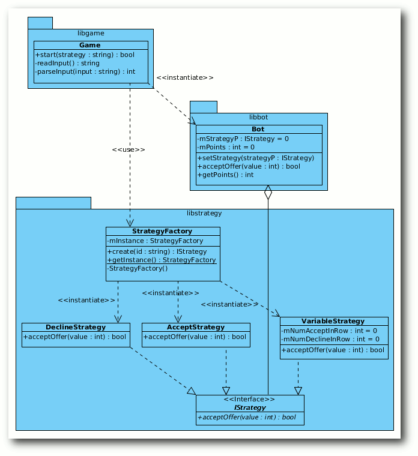Die StrategyFactory als Singleton.
Klassenaufteilung
An den CRC-Karten hat sich zum letzten Teil nichts geändert, weswegen diese hier nicht noch einmal extra dargestellt werden sollen.Abhängigkeiten
Auch an den Abhängigkeiten hat sich zum letzten Teil nichts geändert.Vor- und Nachteile
Es bestehen weiterhin die gleichen Vor- und Nachteile wie im letzten Teil. Das heißt, Erweiterbarkeit und Wartbarkeit sind im aktuellen Zustand sehr gut. Schlecht ist nach wie vor, dass die Fabrik jedes Mal im Code angepasst werden muss, wenn eine neue Strategie hinzukommt. Was ist der Vorteil des Singletons? Es ist sehr klein, aber es wird sichergestellt, dass es nur eine Instanz des Objektes gibt. Natürlich hätte man dies auch mittels einer statischen Methode und eines privaten Konstruktors der vorhergehenden Lösung erreichen können. Dann hat man aber keine Kontrolle darüber, wann die Objekte, die die Fabrik benötigt, erstellt werden. Mit dem Singleton ist dies sichergestellt. Man sollte sich aber über die Bedeutung des Singletons klar werden. Selbst, wenn es zwei parallel stattfindende Spiele geben sollte (also Instanzen von Game), nutzen diese beiden die gleiche StrategyFactory. Aufpassen muss man in diesem Kontext auch auf Threadsicherheit. Wenn es möglich ist, dass die getInstance-Methode parallel aus zwei Threads gerufen werden kann, muss diese so abgesichert werden, dass dennoch nur eine Instanz generiert wird. Ansonsten hat man plötzlich zwei Objekte des Singleton, mit denen gearbeitet wird.Implementierung
In C++ lässt sich das Singleton-Pattern auf mehrere Arten umsetzen. In der Beispielimplementierung wurde die einfache Methode gewählt. Diese ist aber nicht threadsicher, sodass es, wenn es mehrere Threads geben würde, zwei Instanzen der Fabrik zur gleichen Zeit geben könnte. Die C++-Implementierung kann als Archiv heruntergeladen werden: oop5-beispiel.tar.gz.Registrier' Dich!
Ein Nachteil des bisherigen Designs war, dass die StrategyFactory wissen musste, welche konkreten Strategien sie erstellt. Wieso also das Konzept nicht umkehren? Es wäre besser, wenn jede Strategie sich bei der Fabrik anmeldet. Die Fabrik muss nicht wissen, was sie genau dann erstellt, sie muss nur wissen, wie sie es macht.Design
Die Fabrik erhält neben der create-Methode auch eine register-Methode. Die konkreten Strategien können sich nun mit einem Identifier (als String) bei der Fabrik anmelden bzw. übernimmt sinnvollerweise ein externer Strategie-Nutzer diese Anmeldung. Zur Speicherung der Verbindung „Identifier Pfeil rechts Strategie“ wird eine Klasse StrategyMap benutzt, die das assoziative Array darstellen soll. Da dies aber in jeder Sprache anders umgesetzt wird, bleibt die Klasse undefiniert. 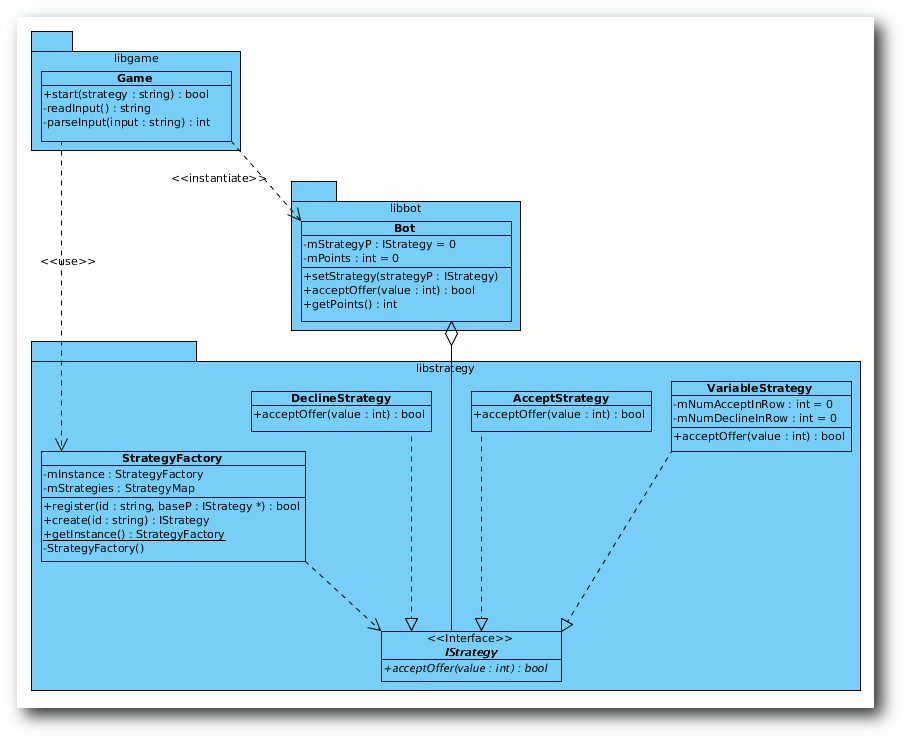Die Strategien werden bei der Fabrik registriert.
Hinweis: Ein Interface unter der StrategyFactory, welches die konkreten Strategien zum Registrieren benutzen könnten, lässt sich nicht oder nur schwer umsetzen, da die StrategyFactory ein Singleton ist. (Da fällt einem die Design-Entscheidung von vorher auf die Füße.)
Klassenaufteilung
Gegenüber des letztes Teils hat sich nur die CRC-Karte der StrategyFactory geändert.- Klasse:
- StrategyFactory
- Benötigt:
- IStrategy
- Verantwort.:
- lässt neue Strategien anmelden und erstellt diese auf Zuruf
Abhängigkeiten
Die Anzahl der Abhängigkeiten hat sich theoretisch verringert, da die StrategyFactory nun nicht mehr von allen konkreten Strategien abhängig ist. Dies ist natürlich nur die halbe Wahrheit, da jemand außerhalb (normalerweise die Hauptroutine) die Anmeldung der konkreten Strategien übernehmen muss und somit von diesen abhängig ist.Vor- und Nachteile
Theoretisch ist man nun am Ziel angekommen. Jede Klasse hat nur eine Verantwortlichkeit. Die Abhängigkeiten zwischen den Paketen/Bibliotheken sind sehr gering. libgame muss nur neu erstellt werden, wenn sich in der Deklaration der StrategyFactory etwas ändert (was hoffentlich nicht mehr der Fall sein wird) und libbot muss nur neu erstellt werden, wenn sich das Interface IStrategy ändert (was hoffentlich auch nicht passiert). Ein weiterer Vorteil der Lösung ist, dass zur Laufzeit neue Strategien hinzukommen können. Man könnte sogar überlegen, eine unregister-Methode hinzuzufügen, sodass zur Laufzeit manche Strategien wieder entfernt werden.Implementierung
Wie oben beschrieben übernimmt am besten die Hauptroutine die Anmeldung der konkreten Strategien bei der Fabrik. In C++ ist das die main-Funktion. Dies ist auch sinnvoll, da nur das Hauptprogramm und nicht irgendeine genutzte Bibliothek weiß, welche Strategien überhaupt eingesetzt und angeboten werden sollen. Hier könnte man bei einer Erweiterung mit eigenen Strategien diese ebenfalls anmelden. Die C++-Implementierung der obigen Klassen kann als Archiv heruntergeladen werden: oop6-beispiel.tar.gz.Ausblick
Das Tutorial ist fast am Ende. Im abschließenden Teil soll es möglich gemacht werden, dass während der Laufzeit die Strategien eigenständig zu anderen Strategien wechseln können. Links[1] https://secure.wikimedia.org/wikipedia/de/wiki/Objektorientierte_Programmierung
[2] http://www.freiesmagazin.de/freiesMagazin-2012-04
[3] https://de.wikipedia.org/wiki/Singleton_(Entwurfsmuster)
| Autoreninformation |
| Dominik Wagenführ (Webseite) ist C++-Software-Entwickler und hat täglich mit Software-Design zu tun. Dabei muss er sich immer Gedanken machen, dass seine Software auch in Zukunft einfach wartbar und leicht erweiterbar bleibt. |
Diesen Artikel kommentieren
Zum Index
Dokumentenmanagement mit LetoDMS – Einrichten der Volltextsuche
von Uwe Steinmann Ein DMS ohne Volltextsuche ist kein DMS. Deshalb verfügt auch LetoDMS seit der Version 3.2.0 über eine solche Suche, die auf den Lucene-Klassen des Zendframeworks beruht. Bei der Installation von LetoDMS stößt man schon auf Einträge für die Konfiguration der Volltextsuche, jetzt geht es daran, diese korrekt zu setzen. Zunächst aber gilt es, das Zendframework und das PEAR-Paket LetoDMS_Lucene zu installieren. Zendframework ist in den Repositorys vieler Distributionen vorhanden, kann aber alternativ auch direkt von der Webseite von Zend [1] heruntergeladen werden. LetoDMS_Lucene findet man im Download-Verzeichnis von LetoDMS. Alle Anpassungen in der LetoDMS-Konfiguration können über die Einstellungen-Seite erfolgen. Damit es funktioniert, müssen zunächst beide Pakete so installiert werden, dass sie über den PHP-Include-Path gefunden werden. LetoDMS_Lucene kann man alternativ auch parallel zu LetoDMS_Core auspacken und dann in den Einstellungen den Pfad unter „Lucene LetoDMS directory:“ entsprechend setzen. Wichtig ist noch das Verzeichnis lucene unterhalb des Content-Verzeichnisses und die Angabe des Pfads in den Einstellungen unter „Directory for full text index:“. Hier wird später der Volltext-Index abgelegt. Es muss sichergestellt sein, dass das Verzeichnis vom User des Webservers geschrieben werden kann. Als Letztes muss noch die Volltextsuche in den Einstellungen eingeschaltet werden und in der Bedienoberfläche sollte eine Checkbox hinter dem Suchfeld in der Kopfzeile erscheinen. Ein Klick auf „Suchen“ (ohne Eingabe eines Suchtextes) zeigt ein zweigeteiltes Suchformular. Links erscheint die schon bekannte Datenbanksuche und rechts die neue Volltextsuche. 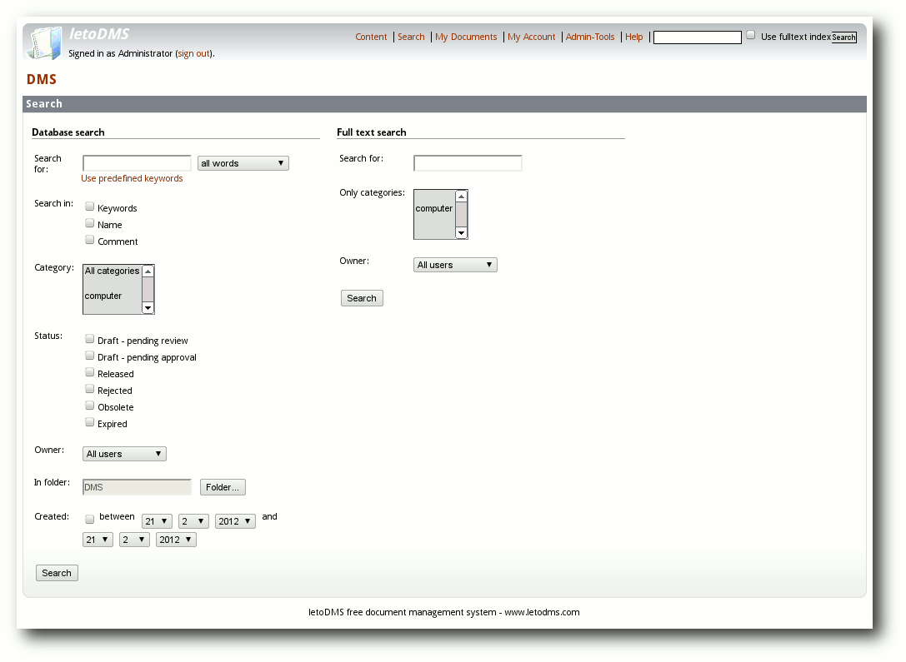Erweitertes Suchformular mit Datenbank- und Volltextsuche
Jeder Versuch etwas zu suchen wird jedoch zunächst noch scheitern, weil zuvor der Index angelegt werden muss. Dafür genügt ein Mausklick auf „Create Fulltext index“ in den Admin-Tools. Je nach Anzahl und Größe der Dokumente kann dies einige Zeit in Anspruch nehmen. Das Ergebnis ist eine eingerückte Liste mit allen Dokumenten, die indiziert wurden, und einem Index auf der Festplatte. Zur Kontrolle bietet sich jetzt ein Klick auf „Fulltext index info“ auf der Seite mit den Einstellungen an. Das Ergebnis ist eine Liste aller indizierten Wörter und wo sie auftreten, denn es werden nicht nur die Inhalte, sondern auch die Metadaten der Dokumente indiziert. Die Einträge in der Liste, die mit „title:“ beginnen, sind beispielsweise Wörter aus dem Titel eines Dokuments. Wenn man hier keine Einträge findet, die mit „content:“ beginnen (dies sind indizierte Wörter aus dem Inhalt), dann befindet sich entweder kein indizierbares Dokument im DMS oder es fehlen noch Programme, die den Inhalt der Dokumente in eine Textdatei konvertieren. LetoDMS kann in der Version 3.3.0 bisher nur die Formate application/pdf, application/msword, application/vnd.ms-excel, audio/mp3, audio/mpeg und text/plain indizieren. Dafür benötigt man die zusätzlichen Programme pdftotext, catdoc, ssconvert und id3. In der Version 3.4.0 wird man weitere Formate und die passenden Programme zur Indizierung in der Konfiguration ablegen können. Werden neue Dokumente eingestellt, dann erscheinen diese nicht sofort im Fulltext-Index. Dafür ist es notwendig, über den Verweis „Update fulltext index“ auf der Einstellungen-Seite den Index zu aktualisieren. Den Index nicht mit jedem Upload eines neuen Dokuments zu aktualisieren, liegt vor allem darin begründet, dass dies mitunter sehr lange dauern und den Webserver erheblich belasten kann, insbesondere wenn mehrere Dokumente gleichzeitig oder sehr große Dokumente hochgeladen werden. Die Aktualisierung sollte daher regelmäßig vom Administrator (ggf. über einen Cronjob) durchgeführt werden. Dabei werden immer nur die Dokumente berücksichtigt, die sich seit der letzten Aktualisierung geändert haben. Die Suche selbst über das bereits erwähnte zweite Suchformular ist eher einfach. Ein Feld für den zu suchenden Text sowie zwei Felder (Kategorie und Besitzer), um das Suchergebnis einzuschränken, sorgen für Übersichtlichkeit. In zukünftigen Entwicklungen ist eine Erweiterung um weitere Suchkriterien nicht ausgeschlossen. Auch die Verschmelzung von Datenbank- und Volltextsuche ist denkbar. Es bleibt nur noch zu erwähnen, dass man zur Volltextsuche wie auch zu allen anderen Fragen zu LetoDMS im Forum von LetoDMS [2] oder unter der deutschen Webseite [3] Hilfe bekommen kann. Links
[1] http://framework.zend.com
[2] http://forums.letodms.com/
[3] http://www.letodms.de
| Autoreninformation |
| Uwe Steinmann ist seit 1996 Entwickler Freier Software und seit Version 3.0.0 hauptverantwortlich für LetoDMS. |
Diesen Artikel kommentieren
Zum Index
Kollaboratives Schreiben mit LaTeX
von Patrick Meyhöfer Ob im wissenschaftlichen oder privaten Bereich: Möchte man die volle Kontrolle über das Aussehen seiner erstellten Dokumente behalten, führt oft kein Weg an LaTeX vorbei. Auch freiesMagazin basiert auf den vielfältigen Möglichkeiten von LaTeX [1]. Eine LaTeX-Umgebung ist mit TeX-Live auch recht schnell auf allen Betriebssystem eingerichtet [2]. Dieser Standardweg zeigt jedoch ein paar Restriktionen auf. Sowohl die Online-Verfügbarkeit des Dokuments von jedem Ort aus sowie der kollaborative Ansatz, dass mehrere Personen zeitgleich an einem Dokument arbeiten können, ist mit den Standardmitteln der Desktopinstallation nicht zu erreichen. Daher sollen nachfolgend Lösungsansätze vorgestellt werden, die versuchen, die gewünschten Zusatzfunktionen bereitzustellen.Cloud-Anbieter oder eigene Hosting-Lösung?
Vorangestellt sei an dieser Stelle angemerkt, dass es zwei grundlegende Optionen gibt, um das Ziel der Kollaboration in Verknüpfung mit der Online-Verfügbarkeit zu erreichen:- Hosting der LaTeX-Dokumente bei einem Cloud-Dienstleister
- eigener Server in Verbindung mit einem Versionskontrollsystem (SVN, Git, Mercurial usw.)
Online-LaTeX-Editoren
Durch den zunehmenden Fortschritt der Webtechnologien und die deutlich größer werdenden Möglichkeiten, Dokumente in Echtzeit über das Internet zu bearbeiten, haben sich verschiedene Anbieter etabliert, die eine bereits fertig konfigurierte LaTeX-Umgebung bereitstellen. So findet man neben dem reinen Online-Editor mit integriertem Syntax-Highlighting auch Möglichkeiten, die erstellten Dateien auf dem jeweiligen Server zu kompilieren und anschließend zu betrachten. Um eine Auswahl zu treffen, bietet sich ein Vergleich der gängigsten Anbieter an. Hinweis: Es werden jeweils nur die kostenlosen Angebote der einzelnen Anbieter getestet, viele Angebote können jedoch über Abgabe eines kleinen Betrages zusätzlich erweitert werden.ScribTeX
Ein interessantes Angebot macht das seit Januar 2009 am Markt bestehende ScribTeX [4]. Nach einer kurzen Registrierung auf der Webseite kann man drei verschiedene Projekte anlegen und insgesamt 50 MB an Speicher für seine Dokumente, Bilddateien etc. verwenden. Leider stehen in der kostenlosen Version die Möglichkeiten der kollaborativen Bearbeitung an Dokumenten nicht zur Verfügung, wodurch das ansonsten gute Angebot etwas getrübt wird. Der Editor und die Benutzeroberfläche wirken aufgeräumt. Es stehen in der Menüleiste lediglich die Möglichkeiten zu speichern, Kommentare zu verfassen und das Dokument zu kompilieren zur Verfügung. 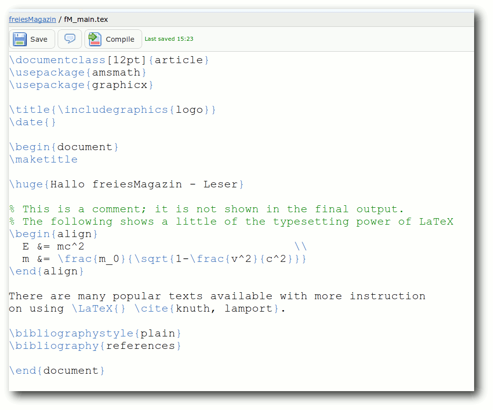LaTeX-Editor von ScribTeX.
Nach den Klick auf „Compile“ wird das Dokument im Hintergrund kompiliert und man bekommt im Anschluss das fertig gerenderte PDF-Dokument in einer Vorschau oder alternativ zum Download angeboten. Der Kompilierungsvorgang geht schneller als auf meinem Desktop-Rechner. Sofern Fehler auftreten oder Warnungen seitens des LaTeX-Compilers bestehen, sind diese jederzeit im Reiter „Log“ der PDF-Vorschau einsehbar. 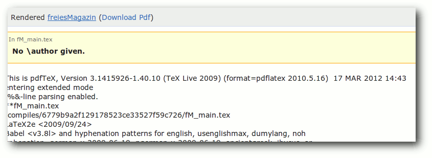
PinsLog-Datei von ScribTeX.
Die Vorteile von ScribTeX liegen neben der Versionskontrolle für die einzelnen Dateien besonders auf der Unterstützung für das Versionskontrollsystem Git für all seine Projekte [5]. Insgesamt macht ScribTeX einen ordentlichen Eindruck, die fehlenden Möglichkeiten der Zusammenarbeit in der kostenlosen Version trüben jedoch den guten Eindruck ein wenig.
ShareLaTeX
Im Gegensatz zu ScribTeX ist ShareLaTeX [6] noch ein junges Projekt, welches sich aktuell noch in der Beta-Phase befindet, ohne jegliche Differenzierungen zwischen Bezahlaccounts und kostenlosen Accounts. Der Aufbau und die Funktionsweise ist ähnlich komfortabel wie bei ScribTeX, auch hier steht ein Online-Editor zur Verfügung, der neben Syntax-Highlighting auch die zugehörigen Klammernpaare anzeigt. Einzig ein Befehlsvorschlag mit den in Frage kommenden Befehlen, wie man es aus gewöhnlichen Entwicklungsumgebungen kennt, wäre wünschenswert. 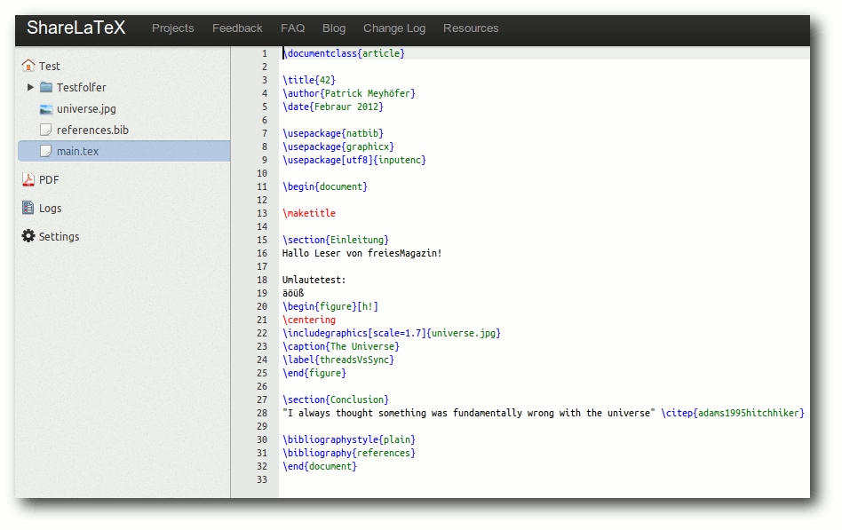Oberfläche von ShareLaTeX.
Der Vorteil von ShareLaTeX liegt vor allem auch im Bereich der Kollaboration. Es ist sehr einfach, über die Einstellungen einen weiteren Benutzer zum aktuellen Projekt mit Lese- und Schreibberechtigungen auszustatten, sodass der Zusammenarbeit nichts entgegen steht. In Zukunft denkt man zur Refinanzierung des Projektes darüber nach, die Anzahl der Projekte zu limitieren. Es soll aber jederzeit einen kostenlosen Account geben [7]. Man sollte hier jedoch beachten, dass die Allgemeinen Geschäftsbedingungen [8] derzeit noch bearbeitet werden und man sie sich nach Ablauf der Beta-Phase noch einmal anschauen sollte.
writeLaTeX
Ein dritter Vertreter, der sogar komplett ohne Registrierung auskommt, ist writeLaTeX [9]. Die Bedienung ist sehr einfach und intuitiv, denn nach dem Klick auf „Start Writing Now“ wird man automatisch zu einem LaTeX-Dokument weitergeleitet, welches direkt bearbeitet werden kann. Hierfür wird ein eindeutiger Link generiert, den man jetzt einfach seinen Freunden und Mitarbeitern am Projekt weiterleiten kann, die dann ebenfalls direkt mit dem Editieren des Dokuments beginnen können. 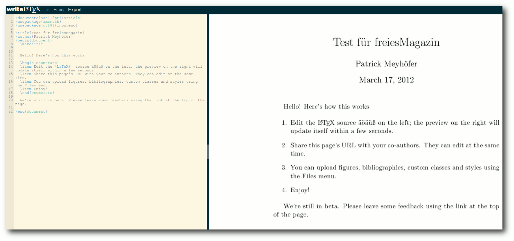Schlicht gehaltene Oberfläche von writeLateX.
Die gesamte Benutzeroberfläche ist in zwei horizontale Fenster geteilt, wodurch man mit einer kurzen Verzögerung das Ergebnis direkt auf der rechten Seite sieht, welches man im Code-Editor auf der linken Seite definiert hat. Das Projekt setzt auf dem durchaus populären Etherpad [10] auf, welches bereits die komfortablen Möglichkeiten der gemeinsamen Online-Bearbeitung von Dateien in mehren Projekten bewiesen hat (siehe u.a. auch das Piratenpad der Piratenpartei [11]) Generell ist writeLaTeX eine der einfachsten und schnellsten Möglichkeiten, gemeinsam an LaTeX-Dokumenten zu arbeiten. Es besteht ebenfalls die Möglichkeit, weitere Dokumente hochzuladen sowie das PDF-Dokument bzw. alle Dateien als Zip-Datei anschließend herunterzuladen. Hier ist man allerdings auf maximal 10 zusätzlich hinzufügbare Dateien (Bilder, .tex-Dateien, Bibliographie-Dateien usw.) limitiert, wodurch writeLaTeX eher für relativ kleine und schnell umzusetzende Projekte geeignet ist.
LaTeX Lab
Einen etwas anderen Ansatz als die bisher vorgestellten Lösungen verfolgt LaTeX Lab [12]. Das Projekt steht unter der Apache Licence Version 2 und wird auf Google Code gehostet [13]. Es setzt direkt auf einer der bekanntesten Plattformen für Zusammenarbeit an Texten auf, nämlich auf Google Docs, und integriert in dieses einen LaTeX-Editor. Demzufolge muss man sich hier auch nicht neu registrieren, sondern man muss über OAuth lediglich der Anwendung den Zugriff auf Google Docs erlauben, damit LaTeX Labs auch die Dateien im Google-Docs-Account speichern kann. Voraussetzung ist hierfür lediglich, dass man auch bereits ein Google-Konto angemeldet hat. Der Vorteil von LaTeX Lab liegt auf der Hand: Man nutzt die Google-Technologien und hat ein einheitliches Bild wie aus Google Docs bekannt, lediglich mit den speziellen Funktionen auf LaTeX angepasst. Generell erinnern die Funktionen am ehesten an die der klassischen Desktop-Umgebungen wie Kile [14] oder Texmaker [15]. So stehen u.a. Möglichkeiten über das Menü zur Verfügung, um sich Aufzählungen generieren zu lassen, mathematische Zeichenbefehle ausgeben zu lassen, grundlegende Formatierungen zu nutzen und vieles mehr. Über die Iconleiste hat man zudem einfach die Möglichkeit, das Dokument zu kompilieren und als PDF-Vorschau im Browser angezeigt zu bekommen. 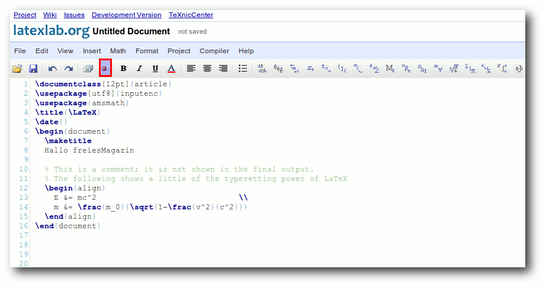LaTeX-Labs-Oberfläche im Stile von Google Docs.
Der große Vorteil liegt bei LaTeX Labs an der tiefen Integration in Google Docs. So kann man 1 GB an Daten speichern und hat die LaTeX-Dateien bei seinen normalen Dokumenten jederzeit verfügbar, sofern man keine Aversionen allgemeiner Art gegenüber Google hegt. Zudem steht auch bei Google Docs standardmäßig eine Versionierungsoption zur Verfügung, mit der man auf vorherige Versionen zurückspringen kann, falls man einmal diese früheren Änderungen braucht.
Eigene Hosting-Lösung über ein Versionskontrollsystem
Wer seine Daten nicht aus der Hand geben will, weil er entweder den vorgestellten Anbietern der verschiedenen Dienste nicht vertraut oder weil es einfach vertrauliche Dateien sind, die keinem Cloud-Anbieter anvertraut werden sollten, kann sich dennoch behelfen, um eine möglichst umfangreiche Zusammenarbeit und Verfügbarkeit seiner Dokumente zu erreichen. Hierfür benötigt man lediglich einen eigens aufgesetzten Server. Grundsätzlich ist es egal, ob man diesen mit einem zentralen Versionskontrollsystem wie Subversion [16] oder mit einem dezentralen System wie Git [17] installiert. In Anbetracht der Möglichkeiten der Versionierung und Nachvollziehbarkeit, wer welche Änderungen am Dokument vorgenommen hat, sind diese durchaus den Online-Lösungen überlegen, die häufig nur eine gewisse Anzahl an Änderungen in der Versionshistorie abspeichern, während man bei SVN & Co. alle Änderungen von Beginn des Dokuments einsehen kann [18]. Der Nachteil liegt eher bei der Zusammenarbeit in Echtzeit. Man kann hier die Änderungen am Dokument nicht so direkt und komfortabel verfolgen, wenn man nicht ständig Updates der Quelldateien machen möchte. Hier sind die Online-Tools deutlich im Vorteil. Im Gegenzug ist man bei der Projektgröße oder der Anzahl an Mitarbeitern am Projekt auf keinerlei Limitierungen von fremden Anbietern angewiesen, sondern einzig auf die Limitierungen, die der selbst aufgesetzte Server besitzt. Bei freiesMagazin setzt man ebenfalls auf die eigene Hosting-Lösung mit einem Subversion-Server, da man die eigenen Daten und die der Autoren nicht aus der Hand geben will. Links[1] https://de.wikipedia.org/wiki/LaTeX
[2] http://wiki.ubuntuusers.de/LaTeX
[3] https://de.wikipedia.org/wiki/Cloud-Computing
[4] http://www.scribtex.com/
[5] http://support.scribtex.com/entries/420897-accessing-your-projects-with-git
[6] https://www.sharelatex.com/
[7] https://www.sharelatex.com/blog/posts/welcome.html
[8] https://www.sharelatex.com/termsAndConditions.html
[9] http://writelatex.com/
[10] http://etherpad.org/
[11] http://www.piratenpad.de/
[12] http://docs.latexlab.org
[13] https://code.google.com/p/latex-lab/
[14] http://kile.sourceforge.net/
[15] http://www.xm1math.net/texmaker/
[16] http://subversion.tigris.org/
[17] http://git-scm.com/
[18] https://en.wikibooks.org/wiki/LaTeX/Collaborative_Writing_of_LaTeX_Documents
| Autoreninformation |
| Patrick Meyhöfer (Webseite) erkundet gerne neue und relativ unbekannte Software und veröffentlicht entsprechende Erfahrungsberichte regelmäßig in seinem Blog. |
Diesen Artikel kommentieren
Zum Index
Tine 2.0 – Installation und Grundkonfiguration
von Andreas Weber Anfang März 2012 wurde die neue Version „Milan” der Groupware Tine 2.0 veröffentlicht. Höchste Zeit also, sich die neue Version anzusehen. Im folgenden Artikel werden die gebräuchlichsten Installationsmethoden sowie die Grundkonfiguration von Tine 2.0 beschrieben.Einleitung
Bei Tine 2.0 [1] handelt es sich um eine browser-basierte Groupware, zu deren Ausstattung unter anderem folgende Elemente gehören:- ein Adressbuch
- ein Kalender
- eine E-Mail- und Aufgaben-Verwaltung
- ein Projekt-Management
- die Anbindung an Asterisk [2]
- eine Customer-Relationship-Management-Software (CRM)
- die Synchronisation von mobilen Geräten mittels ActiveSync, CalDAV und CardDAV,
- und seit Milan auch ein Datei-Manager
Voraussetzungen
Für die Installation von Tine 2.0 wird ein Webserver mit PHP (mindestens in der Version 5.2.1, empfohlen ist Version 5.3) benötigt. Als Webserver kann Apache, lighttpd, nginx oder der IIS von Microsoft verwendet werden. Wichtig ist dabei, dass der Webserver das URL-Rewriting [8] unterstützt, da dies für ActiveSync und andere Komponenten relevant ist. Ferner muss ein MySQL-Server in Version 5.0 oder höher vorhanden sein. Da diese Software-Voraussetzungen mittlerweile auf allen Betriebssystemen erfüllbar sind, kann man Tine 2.0 sowohl auf Linux- und BSD-Distributionen als auch unter Mac OS X oder Windows installieren. Für Tine 2.0 sollte man aber einen aktuellen Browser verwenden.Installation
Es gibt mehrere Möglichkeiten, Tine 2.0 zu installieren. In diesem Artikel sollen die Installation mittels Paketquelle (Repository) und die manuelle Installation beschrieben werden. Der Vorteil bei der Installation mittels Paketquelle liegt darin, dass die Installation schnell und einfach durchgeführt wird und man sich viele manuelle Schritte spart. Allerdings steht diese Variante nur für Debian-basierte Linux-Distributionen zur Verfügung. Kommt eine andere Linux- oder BSD-Distribution, Mac OS X oder Windows zum Einsatz oder möchte man statt des Apache- oder lighttpd-Webservers einen anderen Webserver einsetzen, so muss man die manuelle Installation verwenden. Beide Installationsmöglichkeiten setzen jeweils voraus, dass ein MySQL-Server bereits installiert worden ist.Installation mittels Paketquelle
Da in den großen, bekannten Linux-Distributionen keine Tine 2.0-Pakete in den offiziellen Paketquellen vorhanden sind, muss zuerst die Tine 2.0-eigene Paketquelle eingebunden werden. Diese existiert wie gesagt nur für Debian Squeeze und Ubuntu Natty Narwhale [9]. Nach dem Einbinden der Paketquelle und der Aktualisierung der Paketverwaltung kann man das Paket tine20 installieren. Gleich zu Beginn der Installation erscheint eine Abfrage, ob Apache oder lighttpd als Webserver verwendet werden soll. Es wird jedoch empfohlen, Apache als Webserver zu verwenden, da beim Setup die Integration von lighttpd noch nicht ganz abgeschlossen ist [10]. PHP und alle notwendigen Erweiterungen installiert das Setup, sofern nötig, automatisch. 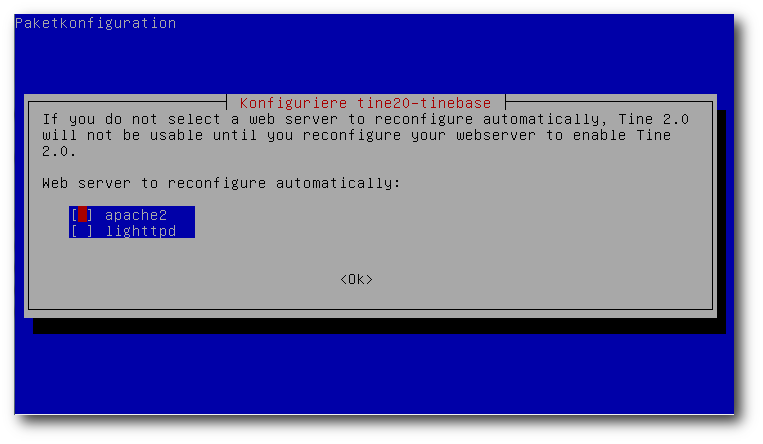Auswahl des Webservers.
Im Verlauf der Installation wird die Datenbank für Tine 2.0 entsprechend eingerichtet. Außerdem muss ein Benutzername samt Passwort für den browser-basierten Teil des Tine 2.0-Setups angegeben werden. Damit ist der konsolen-basierte Teil der Installation abgeschlossen. Der browser-basierte bzw. grafische Teil der Installation wird im Anschluss an den Abschnitt über die manuelle Installation beschrieben.
Manuelle Installation
Für eine erfolgreiche manuelle Installation ist eine bereits vorkonfigurierte Umgebung bestehend aus Webserver mit PHP-Unterstützung und einem MySQL-Server notwendig. Zudem muss eine Datenbank mit dazugehörigem Benutzer für Tine 2.0 bereits eingerichtet sein. Als Erstes lädt man das aktuelle Archiv herunter und entpackt es in das Root-Verzeichnis des Webservers (/var/www/ unter Linux):$ wget http://www.tine20.org/downloads/2012-03-2/tine20-allinone_2012-03-2.tar.bz2
# mkdir /var/www/tine20
# tar xfvj tine20-allinone_2012-03-2.tar.bz2 -C /var/www/tine20
Da Tine 2.0 eine Konfigurationsdatei verwendet, erstellt man eine Kopie
der im Archiv enthaltenen Vorlage:
# mkdir /var/www/tine20
# tar xfvj tine20-allinone_2012-03-2.tar.bz2 -C /var/www/tine20
# cd /var/www/tine20
# cp config.inc.php.dist config.inc.php
Nun editiert man die Datei config.inc.pgp (mit Root-Rechten), um die Konfiguration für die Datenbank und den
Setup-Benutzer samt Passwort vorzunehmen. Ist die Konfigurationsdatei für den
Webserver nicht beschreibbar, so kann man nach Abschluss der Konfiguration eine
aktuelle
Version aus dem grafischen Teil des Setups herunterladen und auf dem
Webserver platzieren. Bei der manuellen Installation sind weitere Schritte
notwendig, um die Weiterleitungsregeln für ActiveSync, CalDAV und CardDAV
einzurichten. Diese unterscheiden sich allerdings nach dem Typ des Webserver,
der eingesetzt wird [11] [12].
# cp config.inc.php.dist config.inc.php
Grundkonfiguration
Tine 2.0 bietet eine Fülle an Funktionen und Möglichkeiten. Im Setup kann sowohl die Anbindung an einen Mail-Server als auch an Verzeichnisdienste konfiguriert werden, Pfade und Protokoll-Einstellungen können vorgenommen und die Anwendungen von Tine 2.0 können installiert oder auch deinstalliert werden. Das Tine 2.0-Setup wird in einem Browser über die Adresse http://www.hostname.tld/tine20/setup.php aufgerufen. Nach erfolgreicher Anmeldung müssen zunächst die diversen Lizenzverträge und die Datenschutzvereinbarung angenommen werden, da das Tine 2.0-Gesamtpaket aus einer Vielzahl an Open-Source-Lizenzen (AGPLv1, AGPLv3, New BSD License, LGPLv2.1, LGPLv3, Apache License 2.0 und GPLv3) besteht. Danach folgt ein erster Test der Umgebung. Im Abschnitt „Config Manager“ werden die Datenbank-Verbindung und verschiedene Verzeichnis-Pfade konfiguriert oder geändert, jedoch ist bei einer Installation über die Paketquelle an dieser Stelle in der Regel keine Änderung notwendig. 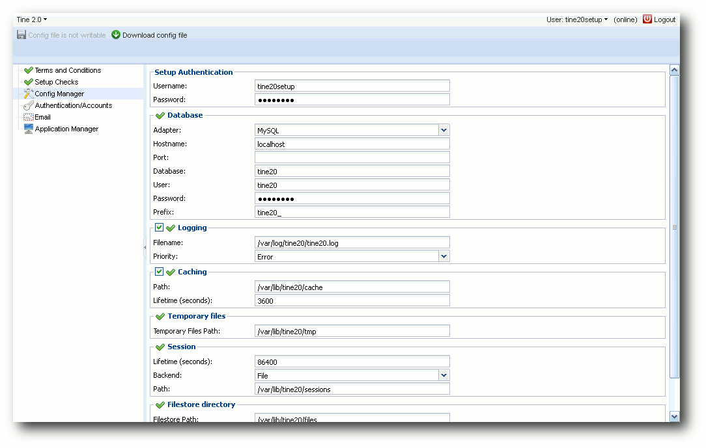Tine 2.0-Setup – Config Manager.
Im Abschnitt „Authentifizierung/Benutzerkonten“ muss der initiale administrative Benutzer mit zugehörigem Passwort angelegt werden. Erst nachdem dieser Schritt vollzogen ist, kann die weitere Konfiguration erfolgen. Ferner kann hier konfiguriert werden, ob Benutzer mit SQL, LDAP oder IMAP authentifiziert werden. Im Abschnitt „Email“ wird die Konfiguration für den IMAP- und SMTP-Server vorgenommen. Hier können sowohl der jeweilige Standard, als auch DBmail, Cyrus, Dovecot und Postfix konfiguriert werden. Zwar ist für den Betrieb von Tine 2.0 grundsätzlich kein Mail-Server notwendig, allerdings benötigt man diesen für die diversen Kalenderalarme, Termineinladungen usw. Im Abschnitt „Application Manager“ können die einzelnen Tine 2.0-Anwendungen installiert werden. Direkt nach der Installation ist neben der „Tinebase“ nur der administrative Teil und das Adressbuch vorinstalliert. 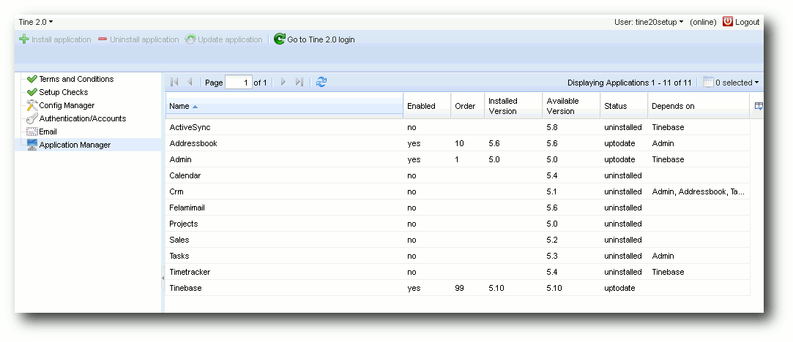
Tine 2.0-Setup – Application Manager.
Im Grunde kann Tine 2.0 bereits jetzt als Adressbuch genutzt werden. In der Regel werden mittels einer Groupware Adressbuch, Kalender und E-Mail zur Verfügung gestellt. Welche Anwendungen man nun innerhalb von Tine 2.0 installiert, ist von den jeweiligen Anforderungen abhängig. Man kann mehrere Anwendungen auf einmal installieren, indem man die betroffenen Anwendungen auswählt und auf „Install application“ klickt. Nach einem kurzem Moment stehen die Anwendungen dann zur Verfügung. Nun kann man sich vom Setup ab- und am eigentlichen Tine 2.0 anmelden.
Kalenderalarme
Damit Kalenderalarme funktionieren, muss neben der erforderlichen E-Mail-Konfiguration ein Cronjob angelegt werden. Diesen fügt man durch den Aufruf von# crontab -e
mittels folgender Zeile hinzu:
* * * * * php -d include_path=.:/usr/share/tine20:/usr/share/tine20/library:/etc/tine20 /usr/share/tine20/tine20.php --method Tinebase.triggerAsyncEvents
Der Befehl muss bei einer manuellen Installation von Tine 2.0
entsprechend angepasst werden. Durch diesen Cronjob prüft Tine 2.0 jede
Minute, ob Kalenderalarme auszulösen sind. Ist das der Fall, versendet die
Groupware eine E-Mail an die am Termin teilnehmenden Benutzer.
Die erste Anmeldung
Um sich in Tine 2.0 anzumelden, ruft man in einem Browser die Adresse http://www.hostname.tld/tine20 auf. Je nachdem, wie die Benutzerauthentifizierung durchgeführt wird, kann man sich ggf. mit einem bestehenden Benutzer anmelden. Ist keine Authentifizierung mittels LDAP oder IMAP konfiguriert, wird gegen die Tine 2.0 eigene Benutzerverwaltung, die innerhalb der MySQL-Datenbank liegt, authentifiziert. Daraus ergibt sich, dass man sich bei der ersten Anmeldung nur mit dem im Setup definierten, initialen administrativen Benutzer anmelden kann. Sobald man angemeldet ist, kann man weitere Benutzer anlegen. Dazu wählt man links oben den Reiter „Tine 2.0“ aus und klickt dort auf „Admin“. In diesem Bereich können die Benutzer verwaltet, Berechtigungen vergeben und weitere Konfigurationen vorgenommen werden. Je nachdem, welche Anwendungen installiert und über das Berechtigungssystem für die Benutzer zugelassen wurden, steht dem Anwender nach der Anmeldung der entsprechende Funktionsumfang zur Verfügung. Nach der ersten Anmeldung sieht man zunächst noch nicht allzu viel, da die einzelnen Anwendungen noch nicht direkt angezeigt werden. Um nun eine Anwendung aufzurufen, muss man links oben auf „Tine 2.0“ klicken und die gewünschte Anwendung aufrufen. Daraufhin öffnet sich eine neue Registerkarte innerhalb der Groupware. Die Registerkarten kann man frei anordnen und Tine 2.0 merkt sich, welche Anwendungen man zuletzt in welcher Reihenfolge geöffnet hatte. Die Oberfläche wirkt aufgeräumt und die meisten Funktionen sind selbsterklärend. Von Vorteil ist, dass vom Projekt immer wieder Umfragen vorgenommen werden, bei denen es um die Benutzbarkeit (Usability) geht. Die Ergebnisse dieser Umfragen fließen in das Produkt ein, wodurch man deutlich die intuitive Bedienung und den Arbeitsablauf (Workflow) spürt. 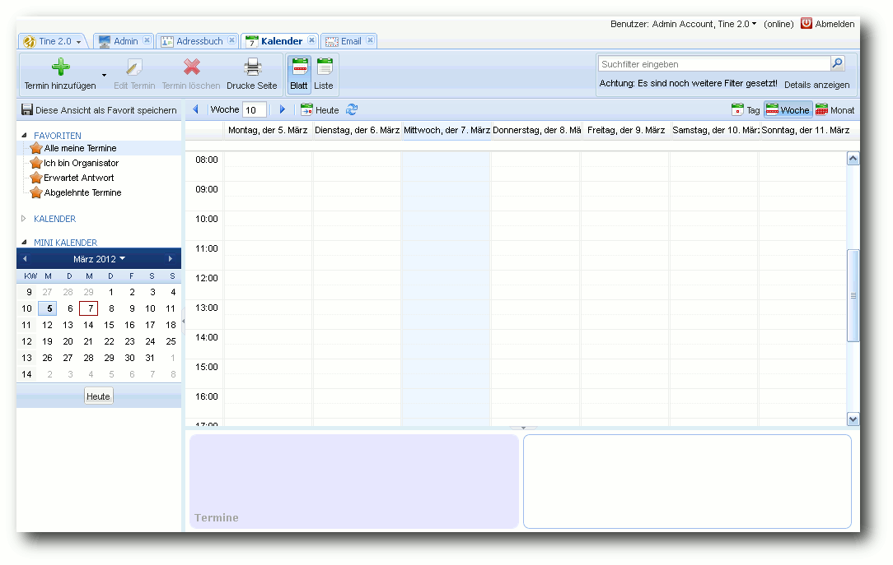Tine 2.0 – Geöffnete Anwendungen.
Fazit
Tine 2.0 ist eine leicht zu installierende Groupware, die auf moderner Technik beruht und sich im Browser nahezu wie eine klassische Anwendung verhält. Die vielen Möglichkeiten zur Synchronisierung von mobilen Geräten machen die Software gerade für Unternehmen mit Außendienst-Mitarbeitern interessant. Im Gegensatz zu manch anderer Open-Source-Lösung steht der volle Funktionsumfang zur Verfügung, so dass keine zusätzlichen Module oder Programmteile kostenpflichtig lizenziert werden müssen. Die stete Weiterentwicklung und Verbesserung sorgen ihrerseits dafür, dass die Community weiter wächst. Für Fragen und Hilfe steht neben der kommerziellen Unterstützung ein Forum zur Verfügung, in dem die Entwickler selbst mitlesen und antworten. Von großem Vorteil ist auch die Plattformunabhängigkeit der Groupware, denn so ist man nicht an ein bestimmtes Betriebssystem gebunden. Man kann den bzw. die zugrunde liegenden Serversysteme je nach Kundenwunsch oder -projekt auswählen. Ferner dürfte es im Zuge des Investitionsschutzes für Unternehmen interessant sein, vorhandene Betriebssystemlizenzen für Tine 2.0 nutzen zu können, ohne zwingend auf ein System wechseln zu müssen, für das unter Umständen keine Expertise im Haus vorhanden ist. Links[1] http://www.tine20.org/
[2] http://www.asterisk.org/
[3] http://www.sipgate.de
[4] http://www.egroupware.org/
[5] http://www.tine20.com/
[6] http://www.officespot.net/
[7] http://www.metaways.de/
[8] http://de.wikipedia.org/wiki/Rewrite-Engine
[9] http://www.tine20.org/wiki/index.php/Admins/Install_Howto
[10] http://www.andysblog.de/tine-2-0-lighttpd-als-webserver
[11] http://www.tine20.org/wiki/index.php/Admins/Synchronisation
[12] http://www.tine20.org/wiki/index.php/Admins/Thunderbird-Synchronisation
| Autoreninformation |
| Andreas Weber (Webseite) ist selbständiger IT-Dienstleister und Blogger. Er ist seit über 10 Jahren in der IT tätig und beschäftigt sich täglich mit Themen rund um Server und Netzwerke. |
Diesen Artikel kommentieren
Zum Index
Astah – Kurzvorstellung des UML-Programms
von Dominik Wagenführ Die Ausgabe von freiesMagazin [1] im Februar enthielt einen kleinen Test diverser UML-Programme. Dabei wurde aber das UML- und Mindmap-Programm Astah [2] übersehen, worauf mich Scott Reece von der entwickelnden Firma Change Vision per E-Mail aufmerksam machte. In diesem Artikel soll gezeigt werden, ob die E-Mail-Nachricht eine gute Idee war und ob das Programm mit anderen mithalten kann.Einleitung
Astah (auch astah* geschrieben) gibt es bereits seit 1996 auf dem Markt. Damals hieß es noch JUDE (nicht wie der Religionsangehörige ausgesprochen, sondern wie der Schauspieler Jude Law), wurde aber wegen Bedenken von deutschen Nutzern aufgrund der Doppeldeutigkeit des Namens 2009 in Astah umbenannt [3]. Astah auf ein UML-Programm zu degradieren wäre ungerecht, da es auch andere Funktionen wie Mind Maps, Entity-Relationship-Diagramme, Flowcharts und mehr unterstützt. Diese Funktionen sind aber fast ausschließlich der kostenpflichtigen Professional Edition [4] von Astah vorbehalten. Daneben gibt es noch eine kostenpflichtige UML-Edition, welche vor allem die UML-Funktionalität mitbringt. Für den Artikel wurde die kostenlose Community Edition von Astah getestet, welche alle benötigten UML-Funktionen zur Verfügung stellt und sich so mit anderen UML-Programmen messen kann. Mir wurde zwar angeboten, am „Friends of Astah“-Programm [5] teilzunehmen, bei dem man eine 1-Jahres-Lizenz für die Professional Edition bekommt, aber die Funktionen der Community Edition reichen für den Test aus. Dennoch ist es schön zu sehen, dass Change Vision den Community-Gedanken fördert und aktive Blogger, Autoren und Referenten durch so ein Angebot unterstützen will. Daneben werden auch diverse Open-Source-Projekte mit Lizenzen gestützt [6]. Insgesamt versucht man aber natürlich, mit dem Vertrieb von Lizenzen kommerziell erfolgreich zu sein.Der Test
Wie bei den im Februar getesteten Programmen soll ein simples UML-Klassendiagramm erstellt werden, welches die gebräuchlichen Elemente wie Klassen, Interfaces, Enums, Realisierung, Generalisierung, Abhängigkeit, Komposition und Aggregation beinhalten soll. Daneben wurde aber auch noch ein kurzer Blick auf Sequenz- und Aktivitätsdiagramme geworfen.Installation und Start
Auf der Downloadseite für die Community-Edition [7] gibt es neben den Windows- und Mac-Versionen auch mehrere Pakete für Linux, darunter die bekannten DEB- und RPM-Pakete, die über die Paketverwaltung installiert werden können. Für den Test wurde die Zip-Version ohne Java Runtime Environment (JRE) und ohne Installer heruntergeladen. Das Zip-Archiv wird einfach entpackt und danach kann man (nach dem Ausführbarmachen der Startdatei) Astah aufrufen:$ unzip astah-community-6_5_1.zip
$ cd astah_community
$ chmod +w astah
$ ./astah
Für die Benutzung muss eine JRE wie OpenJDK installiert sein. Die
Oberfläche ist leider nur in Englisch vorhanden.
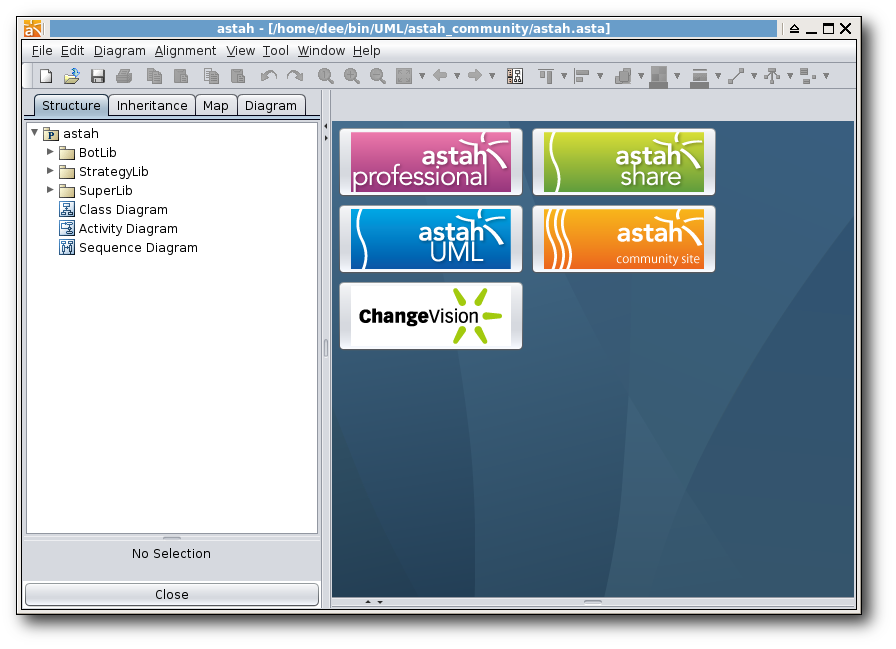$ cd astah_community
$ chmod +w astah
$ ./astah
Das Startbild von Astah im Nimbus-Look.
Klassendiagramme
Die Pakete und Klassen lassen sich in Astah sehr intuitiv erstellen. Entweder man klickt mit der rechten Maustaste in die Klassenübersicht und wählt dort „Create Model“ oder man klickt das gewünschte Icon in der Symbolleiste über dem Diagramm an. Daneben kann man auch direkt auf eine Klasse im Diagramm klicken und erhält dort zwei kleine, farbige Symbole, um Methoden (grün) oder Attribute (orange) hinzuzufügen. Die Eingabe der Methoden und Namen kann man praktischerweise direkt in die jeweilige Zeile eintippen, muss sich dabei aber an die UML-Notation halten. Alternativ kann man in der linken Übersicht über zahlreiche Reiter die Methoden und Attribute genau spezifizieren. Schade ist es dabei, dass alle Methoden zwingend einen Rückgabewert benötigen, der im Notfall eben void ist. Dies ist etwas verwirrend, da beispielsweise Konstruktoren gewöhnlich keine Rückgabewerte haben. Sehr schön sind die Voreinstellungen für Attribute und Operationen. So sind Attribute per Standard private, Operationen dagegen sind public, so wie das der Regelfall sein sollte. Bei Interfaces werden Methoden auch gleich als abstrakt gekennzeichnet. Enums kann man leider nicht direkt eingeben, dafür kann man aber jeglichen Stereotyp eingeben und auch Enums darstellen. Die Verbindungslinien zwischen Elementen kann man gerade, eckig oder rund darstellen und auch manuell routen, indem man die Linie per Drag&Drop dahin zieht, wo sie hin soll. Bei der Selektion ist aber zum Beispiel die Auswahl eines Paketes ungewöhnlich, da man nicht in das Paket direkt klicken darf, sondern den Paketrand bzw. -kopf anklicken muss. Hieran gewöhnt man sich aber schnell. 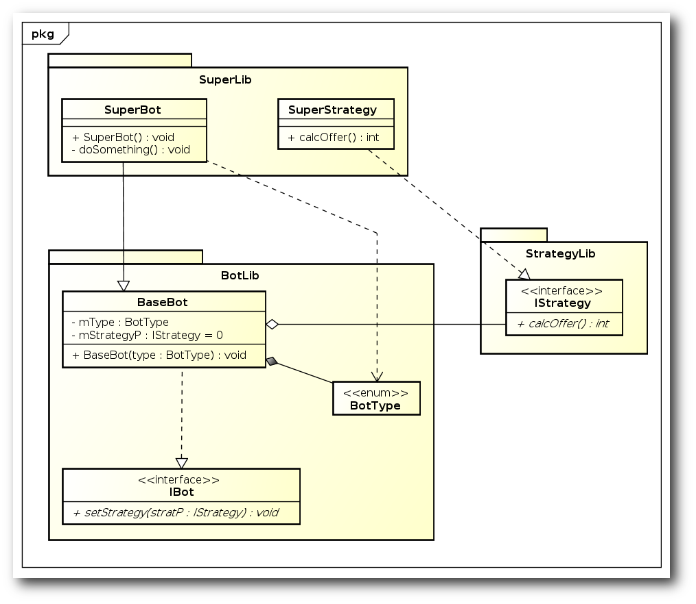Die Klassendiagramme sind optisch ansprechend.
Die Sichtbarkeit von einzelnen Attributen oder Operationen lässt sich über die rechte Maustaste auf eine Klasse und der Wahl von „Extended Visibility“ einstellen. Schade ist, dass es keine direkte Möglichkeit gibt, Elemente auszublenden. Positiv hervorzuheben ist das Auto-Resize der Klassen, sodass diese automatisch immer so viel Raum einnehmen, wie sie echt benötigen. Bei den Paketen hat man sich diese Funktion leider gespart, sodass man immer manuell nachbereiten muss, wenn ein Bild wenig Platz einnehmen soll. Das Auto-Layout konnte nicht getestet werden, da es in der Community-Edition nicht zur Verfügung steht. Insgesamt sind die Diagramme mit den Farbverläufen und ihrer klaren Schrift schön anzusehen. Der Schatten um alle Elemente ist etwas störend, kann aber leicht in den Optionen deaktiviert werden.
Andere Diagramme
Die anderen Diagramme wie Sequenzdiagramm oder Aktivitätsdiagramm sind gut nutzbar und bieten viele Optionen. So gibt es bei den Sequenzdiagrammen alle relevanten Artefakte, die man benötigt. 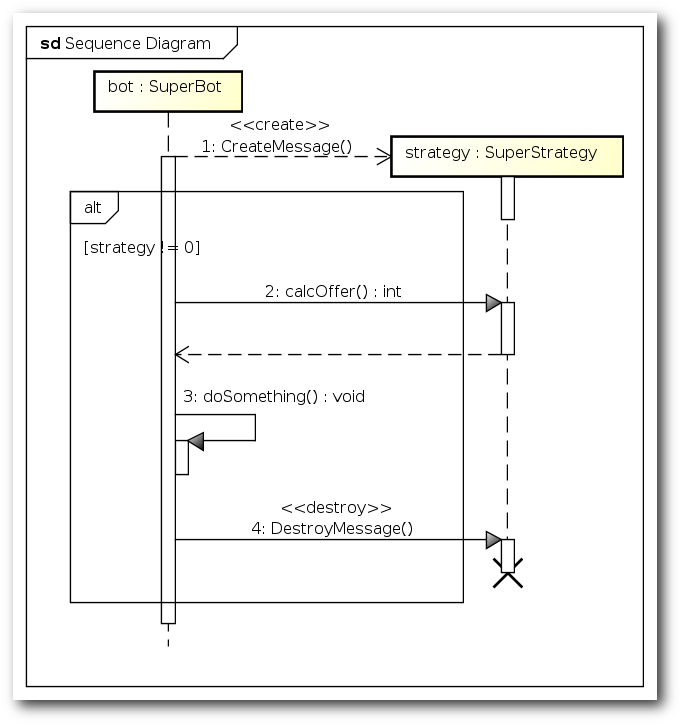Auch das Sequenzdiagramm bietet alles, was man benötigt.
Fazit
Es sei sicherheitshalber vorab gesagt, dass nicht jede Option und Einstellung von Astah getestet wurde. Im Test wurde nur versucht, ein paar Diagramme zu zeichnen und zu prüfen, wie intuitiv und gut sich das Programm testen lässt. Dadurch, dass Astah auf Java zurückgreift, ist es zwar etwas langsamer in der Bedienung, kann dafür aber plattformunabhängig eingesetzt werden – für die Interoperabilität über mehrere Plattformen hinweg ein nicht von der Hand zu weisendes Argument. Eher von Nachteil ist, dass das Programm nur in Englisch bereit steht. Natürlich haben die meisten Menschen im Informatik-Umfeld damit keine Probleme, dennoch wäre eine Lokalisierung schön gewesen. Wichtig für Linux-Nutzer ist, dass Astah nicht frei ist. Die Firma Change Vision will mit Astah Geld verdienen und stellt die Community Edition nur kostenlos zur Verfügung. Wer damit ein Problem hat, muss sich eine der freien Alternativen anschauen, wovon es aber kaum welche gibt, die vollends überzeugen können. Ganz bugfrei ist Astah nicht. So wechselte im Test die gesamte Schriftfarbe im Diagramm plötzlich auf Türkis und es wurde eine sehr pixelige Schriftart benutzt. Aber nach einem Speichern und Laden des Programm war der Darstellungsfehler behoben, sodass dies zu verschmerzen ist. Das Fazit fällt also überaus positiv aus. Astah ist ein gutes UML-Programm, was auch in der Community Edition zahlreiche Funktionen für die Erstellung von Software-Designs bietet. Wer andere UML-Programme kennt, wird sich in Astah auf alle Fälle schnell zurechtfinden. Die optisch ansprechende Gestaltung macht es dabei zu einer echten Alternative zu dem in freiesMagazin 02/2012 empfohlenen Visual Paradigm [1]. Links[1] http://www.freiesmagazin.de/freiesMagazin-2012-02
[2] http://astah.net/de
[3] https://secure.wikimedia.org/wikipedia/en/wiki/Astah#History
[4] http://astah.net/editions
[5] http://astah.net/friends-of-astah
[6] http://astah.net/friends-of-astah/friends
[7] http://astah.net/download#community
| Autoreninformation |
| Dominik Wagenführ (Webseite) ist Software-Entwickler und wirft täglich mit UML-Diagrammen um sich. |
Diesen Artikel kommentieren
Zum Index
Rezension: PyQt und PySide
von Jochen Schnelle Die Qt-Bibliothek [1] gehört zu den bekanntesten und populärsten, wenn es um die Erstellung von grafischen Benutzeroberflächen geht. Das vorliegende Buch namens „PyQt und PySide“, welches Anfang dieses Jahres neu erschienen ist, möchte in die Nutzung der Bibliothek in Kombination mit Python einführen. Das verdeutlicht auch der Untertitel des Buchs: „GUI- und Anwendungsentwicklung mit Python und Qt“.Umfang
Die Qt-Bibliothek ist sehr leistungsfähig und umfangreich, die im Buch beschriebenen Python-Module PyQt und PySide unterstützen nahezu den kompletten Funktionsumfang. Von daher ist es auffällig, dass das Buch relativ dünn ist, es hat nur etwas mehr als 200 Seiten. Die offizielle Dokumentation von Qt – ebenso wie die von PyQt/PySide – ist um ein Vielfaches umfangreicher. Das Anliegen des Buchs ist aber, die Leser in die Nutzung von Qt aus Python heraus einzuführen, also quasi den initialen Anstoß zu geben, und kein umfassendes Referenzwerk zu sein. Dies wird auch explizit in der Einleitung erwähnt. Da Qt plattformübergreifend eingesetzt werden kann, geht das Buch auch auf die verschiedenen, gängigen Betriebssysteme ein. Dies sind in erster Linie Linux und Windows. Wo immer notwendig, wird aber auch MacOS erwähnt. Des Weiteren werden die beiden gängigen Python-Module zur Anbindung von Qt, PyQt und PySide, ebenfalls äquivalent behandelt. Auch hier wird nach Notwendigkeit im Beispielcode immer auf Unterschiede bei der Nutzung eingegangen.Inhalt
Insgesamt umfasst das Buch sechs Kapitel. Das Erste, welches mit etwas mehr als 50 Seiten auch das Umfangreichste ist, bietet eine Einführung in die Nutzung von PyQt/PySide. Diese beinhaltet unter anderem gängige grafische Elemente und Dialoge sowie das Konzept von Signalen und Slots. Im zweiten Kapitel wird auf die Internationalisierung eigener Programme sowie den Einsatz des Qt-Designers zur Gestaltung von grafischen Benutzeroberflächen eingegangen. Im folgenden Kapitel beschreibt der Autor, wie (umfangreichere) eigene Programmprojekte strukturiert werden können. Auch wird hier die Erstellung von Paketen für Linux und Installer für Windows beschrieben. Das vierte Kapitel widmet sich dem Thema Qt-Quick und QML, welches wohl in Zukunft zunehmend Bedeutung für Qt gewinnen wird. Mit Hilfe von QML wird hier ein einfacher Feedreader entwickelt, welcher bei einem Klick auf einen Feedtitel die entsprechende Seite direkt innerhalb der Qt-Anwendung anzeigt. Die letzten beiden Kapitel beschreiben dann noch vier Beispielanwendungen, bei denen ein einfacher Webbrowser, ein Codeeditor für Javascript-Code, welcher direkt innerhalb des Editors ausgeführt werden kann, ein Bildbetrachter und ein Audioplayer mit Hilfe von PyQt/PySide realisiert werden. Dabei wird für die Erstellung der Oberfläche an den meisten Stellen auch wieder auf QML zurück gegriffen.Darstellung
In allen Kapiteln findet man viele Codebeispiele zu den behandelten Themen. Hier fällt positiv auf, dass alle Beispiele komplett und lauffähig sind, es gibt keine Codefragmente oder ähnliches. Leider schweigt sich das Buch darüber aus, ob man die Beispiele auch im Internet herunterladen kann. Weiterhin enthält das Buch relativ viele Bilder von den grafischen Oberflächen und Programmen, welche im Rahmen des Buchs entwickelt werden. Diese sind zwar durchgehend in Graustufen gedruckt, nichtsdestotrotz aber gut lesbar und aussagekräftig. Die weiter oben erwähnten Beispielanwendungen bieten alle einen guten Einblick in die Möglichkeiten von Qt für ein paar gängige Einsatzgebiete von (Heim-)Computern wie dem Surfen im Internet oder dem Betrachten von Bildern. Alle Programme sind ohne weiteres einsatzfähig, nur ist der Funktionsumfang natürlich entsprechend gering. Nichtsdestotrotz bieten sie eine solide Codebasis für eigene Weiterentwicklungen und Erweiterungen. Lediglich der Audioplayer fällt gegenüber den anderen Anwendungen etwas ab, weil er nur mit WAV-Dateien umgehen kann. Dies ist aber wenig dem Autor anzulasten als vielmehr der Qt-Bibliothek. WAV-Dateien sind im Moment nämlich die einzigen, die über alle Plattformen hinweg von Qt unterstützt werden. Schon erstellter Code wird im Laufe des Buchs, wo passend, auch immer wieder aufgegriffen und verfeinert oder alternativ implementiert, wodurch das Buch einen guten Zusammenhalt und eine Art „roten Faden“ erhält. Wie in der Einleitung bereits erwähnt, soll das Buch als Einführung in das Thema Qt mit Python dienen. Entsprechend findet man an vielen Stellen weiterführende Links, mit denen das gerade Gezeigte vertieft werden kann. Die Links sind dabei durchgehend als Fußnoten ausgeführt, was dem Lesefluss zugute kommt. Apropos Lesefluss: Der Schreibstil des Autors lässt sich als „unspektakulär“ beschreiben. Sprich: Sachlich, gut und flüssig zu lesen, ohne negative (oder positive) Auffälligkeiten. Somit liegt der Fokus auch durchweg auf dem Inhalt.Fazit
„PyQt und PySide – GUI- und Anwendungsentwicklung mit Python und Qt“ bietet eine gute Einführung in das Thema. Neues oder Highlights bietet das Buch zwar nicht – äquivalente Informationen sind wohl auch im Internet zu finden. Allerdings dann sicherlich nicht so kompakt und in sich schlüssig zusammengefasst. Wer sich mit der Nutzung von Qt aus Python heraus beschäftigen möchte, findet in dem Buch eine solide Grundlage für den Einstieg in das Thema.| Buchinformationen | |
| Titel | PyQt und PySide – GUI- und Anwendungsentwicklung mit Python und Qt |
| Autor | Peter Bouda |
| Verlag | Open Source Press, 2012 |
| Umfang | 224 Seiten |
| ISBN | 978-3941841505 |
| Preis | 29,99 € |
Links
[1] http://qt.nokia.com/
| Autoreninformation |
| Jochen Schnelle (Webseite) programmiert gerne in Python und nutzt zur Erstellung von grafischen Oberflächen die Qt-Bibliothek über PySide. |
Diesen Artikel kommentieren
Zum Index
Rezension: C++11 programmieren
von Dominik Wagenführ Das Buch „C++11 programmieren“ von Torsten T. Will wirbt mit dem Untertitel „60 Techniken für guten C++11-Code“. Die Rezension soll zeigen, ob das stimmt. Redaktioneller Hinweis: Wir danken dem Verlag Galileo Computing für die Bereitstellung des Rezensionsexemplars.Hintergrund
Der neueste C++-Standard sollte eigentlich im letzten Jahrzehnt veröffentlicht werden, nachdem die letzte Standardisierung 2003 stattfand. Der Prozess zog sich aber hin, sodass aus dem angedachten C++0x irgendwann ein C++11 wurde. Im Oktober 2011 wurde der Standard dann offiziell verabschiedet [1]. Das Buch „C++11 programmieren“ liefert einen Überblick über einen Teil der Neuerungen von C++11 und richtet sich damit vorrangig an erfahrene C++-Programmierer, die auf dem neuesten Stand der Technik gehalten werden wollen. Auch wenn das Buch keine vollständige Liste der Neuerungen beinhaltet, kann es sicherlich auch als Nachschlagewerk benutzt werden. Für den Einstieg in die C++-Programmierung ist es aber gänzlich ungeeignet.Aufbau
Wer sich das Inhaltsverzeichnis anschaut, dem fällt auf, dass der erste Teil erst bei Seite 27 beginnt. Was treibt der Autor die 26 Seiten davor? Etwas, was man sich von mehr technischen Büchern wünschen würde: ein Vorwort, in dem die Zielgruppe klar definiert wird, sowie ein Beispielkapitel, in dem der Aufbau und die Syntax der späteren echten Kapitel erklärt wird (S. 17 ff.). So hat man keine Probleme, den Text und die Auszeichnungen zu verstehen. Der Aufbau eines Kapitels beginnt mit einer kurzen Einleitung, in der man auch mithilfe von kurzen Codebeispielen das neue Thema klar und verständlich erläutert bekommt. Danach folgt ein Abschnitt mit detaillierten Hintergründen, die sehr genau auf die Beispiele eingehen und alles erklären. Am Ende des Kapitels steht ein Mantra, welches noch einmal ganz kurz in ein, zwei Sätzen zusammenfasst, was die Essenz des Kapitels ist. Thematisch gliedert sich das Buch in fünf Teile. Der erste Teil soll dabei an C++03 erinnern (also den C++Standard aus 2003), damit man die Neuerungen von C++11, die in anderen Teilen beschrieben werden, besser versteht. Prinzipiell wäre das eine gute Idee, wenn der Autor dies konsequent eingehalten hätte. So vermischen sich in diesem Teil C++03- und C++11-Syntax, was das Verständnis der Beispiele nicht erleichtert. Ständig fragt man sich: ‚Hm, das kannte ich ja gar nicht. Ist das schon C++11 oder kenne ich nur den C++03-Standard nicht gut genug?‘ Was vielleicht auch nicht so praktisch, aber teilweise verständlich ist: So gut wie nichts wird mit Klassen definiert, sondern es werden nur Strukturen genutzt. Der Autor weist aber am Anfang darauf hin, dass dies für eine echte Programmierung sehr schlechter Stil wäre und man sich daran kein Beispiel nehmen sollte (S. 22). Der zweite Teil ist dann der interessanteste des Buches, denn es wird auf die neuen Sprachmechanismen von C++11 eingegangen. So kommen unter anderen die neue Art der Initialisierung, Typsicherheit, const_expr, finale Klassen und Ableitungen, die neue Verschiebesemantik und RValues sowie Templates vor. Ob auf alles Wichtige des C++11-Standards eingegangen wird, kann ich nicht beurteilen; die 200 Seiten lesen sich aber sehr informativ und man bekommt ein sehr guten Einblick in die neue Syntax. Vor allem kann man sehr leicht herausfiltern, was einem selbst wichtig erscheint und welches Sprachfeature man eher nicht sinnvoll einsetzen kann. Interessant wäre noch zu wissen, ob die Dreierregel [2] mit der neuen Verschiebesemantik in eine Fünferregel umgeschrieben werden muss. Torsten T. Will deutet so etwas jedenfalls an, zumal C++ nun noch weniger Standard-Konstruktoren und -Operatoren erstellt, wenn man es nicht explizit sagt. Mir selbst haben vor allem die neuen const-Möglichkeiten gefallen (S. 102), in die auch in Teil 1 (S. 39) eingegangen wird. So kann durch ein const an der richtigen Stelle ein fehlerhaftes Design entlarvt werden. Aber auch die neuen Eigenschaften für Klassenoperationen wie override und final (S. 139 ff.) bzw. delete und default (S. 196 ff.) finden sicherlich sinnvolle Verwendung. Der dritte Teil beschäftigt sich ausgiebig mit Containern, Pointern und Algorithmen. Die Aussage am Anfang des Buches (S. 36), dass man in C++ auf void-Pointer oder Pointer-Casts verzichten kann, wird beispielsweise durch die neuen unique_ptr und shared_ptr unterstrichen (S. 275 ff.). Insgesamt ist das Kapitel sehr sinnvoll für alle, die bereits einige Hilfsmittel der STL (Standard Template Library) einsetzen. Und in Teil 4 geht es auch mit der STL weiter, denn es werden die Features beschrieben, die dort neu Einzug gehalten haben. Vorrangig ist das sicherlich das Thema Multithreading (S. 321), welches auf knappen 34 Seiten abgehandelt wird. Dennoch bekommt man einen guten Einblick in die Möglichkeiten, die C++ hier bietet. Aber auch reguläre Ausdrücke sowie Einheiten und Umrechnungen werden nun direkt in C++ unterstützt. Im Anhang findet man zum einen eine kurze Übersicht, was man in C++11 nicht mehr tun sollte, da einige Sprachelemente wie register als veraltet deklariert wurden. Noch sinnvoller ist aber die Compilerübersicht in Anhang C (S. 402), die aufzeigen soll, welche C++11-Features welcher Compiler alles umsetzt. Da es sich natürlich um eine gedruckte Liste handelt, ist sie im Buch veraltet, im Apache-Wiki findet man aber den aktuellen Stand [3]. Nur für den GNU-Compiler GCC gibt es diese Liste bei gnu.org [4].Fazit
Hält das Buch, was es mit „60 Techniken für guten C++11-Code“ verspricht? Zuerst sei gesagt, dass die 60 sich aus den 62 Kapiteln im Buch ableitet, ansonsten aber keine Bewandtnis hat. Und ob es wirklich guter Code ist, den Torsten T. Will zeigt, soll gar nicht beurteilt werden, da Programmierer wie Künstler sind jeder seinen eigenen Stil pflegt. Die Frage lautet eher: Wird einem Leser aber der neue C++-Standard verständlich beigebracht? Und hier ist die Antwort definitiv ja. Der Aufbau der Kapitel ist sehr klar und strukturiert. Teilweise Popkultur-Referenzen auf Star Wars, Star Trek oder Herr der Ringe regen zum Schmunzeln an (wenn man mit der Thematik vertraut ist). Sehr schön ist auch, dass die Kapitel zu einem Thema gut ineinander übergehen und sich gegenseitig referenzieren. Die Aufteilung wirkt dadurch sehr gut durchdacht. Autor Torsten T. Will schafft es auch, die Leser in eine fremde Thematik einzuführen. So gehören Lambda-Funktionen, RValues oder Multithreading nicht zu den Alltagsfragen eines Programmierers, dennoch schafft man es auch ohne viel Wissen in dem Gebiet (fast) alles zu verstehen. Daneben gibt es auch viele Hinweise auf guten Programmierstil bzw. Hintergrundinformationen, die sich etwas von C++11 entfernen, aber dennoch nicht jedem C++-Programmierer bekannt sind. So wissen viele nicht, was ein const in Zusammenhang mit Zeigern an der richtigen Stelle für Auswirkungen hat (S. 39). Eigentlich selbstverständlich, aber leider immer wieder erwähnenswert ist die Fehleranzahl im Buch. Obwohl es sich um die erste Auflage handelt, findet man erfreuliche wenige Fehler im Buch. An einigen Stellen gibt es zwar Buchstabendreher, aber in der Regel erschließt sich sofort aus dem Kontext, wie es richtig lauten muss. Einen kleinen Problempunkt sehe ich in der Ansprache der Leser. So wird im Text oft von „wir“ gesprochen, womit der Autor sich und die Lesergemeinde meint. An andere Stelle bezeichnet das „wir“ aber den Autor und ggf. die anderen am Buch beteiligten Personen. Im Text selbst wird der Leser dann mit „Sie“ angesprochen, in den Mantras am Ende eines Kapitels aber immer mit „du“. Dies wirkt noch etwas durcheinander, ist aber nur ein kleiner Kritikpunkt. Zweiter, kleiner Negativpunkt ist die Mischung des Inhaltes. So setzt Torsten T. Will auch in frühen Kapiteln Syntaxelemente aus C++11 ein, die er erst viel später dem Leser bekannt macht. Für Entwickler, die nicht hundertprozentig den C++03-Standard auswendig kennen – und dies kann wohl keiner – ist damit nicht immer klar, ob es sich um ein C++03- oder ein C++11-Feature handelt. Insgesamt kann man dem Buch aber eine sehr gute Note ausstellen. Es ist übersichtlich, klar strukturiert und interessant geschrieben. Für C++-Entwickler, die den neuen Standard kennen lernen wollen, kann daher eine klare Empfehlung ausgesprochen werden. Für C++-Einsteiger ist das Buch nicht geeignet, aber auch nicht gedacht. Redaktioneller Hinweis: Da es schade wäre, wenn das Buch bei Dominik Wagenführ verstaubt, wird es verlost. Die Gewinnfrage lautet: „Welches neue Feature bietet der C++11-Standard in Bezug auf Klassenvererbung, welches es bei Java schon lange gibt?“ Die Antworten können über die Kommentarfunktion unterhalb des Artikels oder per E-Mail an| Buchinformationen | |
| Titel | C++11 programmieren |
| Autor | Torsten T. Will |
| Verlag | Galileo Computing, 2012 |
| Umfang | 414 Seiten |
| ISBN | 978-383621732-3 |
| Preis | 29,90 Euro |
Links
[1] https://secure.wikimedia.org/wikipedia/de/wiki/C++11#Weiterentwicklung_der_Programmier"ßprache_C.2B.2B
[2] https://de.wikipedia.org/wiki/Dreierregel_(C++)
[3] http://wiki.apache.org/stdcxx/C++0xCompilerSupport
[4] http://gcc.gnu.org/projects/cxx0x.html
| Autoreninformation |
| Dominik Wagenführ (Webseite) entwickelt beruflich Software in C++ und muss sich deshalb auch auf den neuen C++11-Standard vorbereiten. |
Diesen Artikel kommentieren
Zum Index
Rezension: Java 7 – Mehr als eine Insel
von Michael Niedermair Das neue Werk [1] „vom Java-Champion“ Christian Ullenboom ergänzt das Grundlagenbuch „Java ist auch eine Insel“ (inzwischen 10. Auflage), indem es die Java-Standard-Bibliothek in den einzelnen Bereichen behandelt. Es stellt ein Nachschlagewerk/eine Referenz für die einzelnen Bereiche dar und erklärt an praxisnahen Beispielen die Thematik. Der Autor ist Diplom-Informatiker und seit 1997 Trainer und Berater für Java-Technologien. Ob das Buch mit allen seinen Facetten die Ansprüche an einen „Java-Champion“, wie es auf dem Buch-Cover steht, gerecht wird, wird im Folgenden beleuchtet. Redaktioneller Hinweis: Wir danken dem Verlag Galileo Computing für die Bereitstellung eines Rezensionsexemplares.Was steht drin?
Das Buch ist in 23 Bereiche mit Vorwort und Index aufgeteilt und umfasst 1433 Seiten. Am Ende finden sich sieben Seiten Werbung zu anderen Büchern. Abgeschlossen wird es mit dem Index, der neun Seiten umfasst. Er enthält Stichworte, Programmkonstanten und Methoden. Zu den Standard-Bibliothek-Funktionen von Java7-SE hat sich auch so manche externe Bibliothek zu den einzelnen Themengebieten geschlichen, z. B. JDOM bei der XML-Verarbeitung oder Apache HttpComponents bei der Netzwerkprogrammierung.Wie liest es sich?
Das Buch ist für den schon erfahrenen Java-Anwender geschrieben und setzt die Grundlagen aus dem Buch „Java ist auch eine Insel“ vom selben Autor voraus. Es dient als Nachschlagewerk/Referenz für die einzelnen Bereiche der Java-Standard-Bibliothek und die neuen Funktionen von Java 7. Jeder Bereich ist in sich abgeschlossen und die Bereiche bauen im Wesentlichen nicht aufeinander auf, so dass man mit jedem Bereich nach Vorkenntnissen und Vorlieben beginnen kann. Die einzelnen Bereiche lassen sich gut lesen (das Zusammenspiel von Layout, Schrift, Tabellen, Quelltext und Bildern ist sehr angenehm) und sind mit praxisnahen Beispielen versetzt, denen man leicht folgen kann. Dabei werden nur die wesentlichen Codebereiche abgedruckt. Entsprechende Klassenbeziehungen/-vererbungen werden durch UML-Diagramme grafisch dargestellt. Zur Aufheiterung findet man ein paar Comics, welche den Sachverhalt lustig darstellen.Kritik
Das Buch ist für den schon erfahrenen Java-Anwender, der das Buch als Nachschlagewerk oder Referenz verwenden will, sehr gut geeignet. Ein Java-Anfänger sollte besser auf das parallele Werk „Java ist auch eine Insel“ ausweichen und das hier besprochene Werk erst später lesen. Man merkt deutlich, dass der Autor viel Erfahrungen mit Java und als Java-Trainer hat und ein Experte auf diesem Gebiet ist. Alle Beispiele sind methodisch sehr gut aufgebaut, alle „Fallstricke“ und „Stolpersteine“ werden gut erklärt, so dass man dem Inhalt sehr gut folgen kann. Der Index ist sehr umfangreich und sehr gut aufgebaut. Die meisten Einträge haben weniger als drei Verweise, so dass man sehr schnell findet, was man sucht. Das Buch erscheint als Hardcover-Version und liegt trotz seiner Dicke gut in der Hand, auch wenn es über 1400 Seiten hat. Es hat ein Lesebändchen und ein Daumenkino für die einzelnen Bereiche. Das Preis-Leistungs-Verhältnis ist hier sehr gut. Der Aufdruck auf dem Cover „vom Java-Champion“ ist hier gerechtfertigt, wobei ein paar Schatten auf den Schein fallen. Die im Buch verwendeten UML-Diagramme sind als Pixelgrafik eingebunden, was dazu führt, dass schräge Linien in kleinen Treppenstufen erscheinen. Auch stellt man bei den UML-Diagrammen fest, dass diese nicht einheitlich sind, manche Klassendiagramme haben nur einen Rahmen, andere werden zusätzlich mit einem Schatten versehen. Bei manchen Klassendiagrammen hätte ich mir deutlich weniger Methoden gewünscht, so dass das Diagramm z. B. keine ganze Seite einnimmt und nur die Methoden enthält, die man wirklich darstellen muss. Bei zwei Themen habe ich mich gefragt, ob diese wirklich sinnvoll sind. JNI wird mit gerade einmal 18 Seiten angeschnitten. Hier hätte ich mir entweder deutlich mehr gewünscht oder man hätte die Seiten einem anderen Bereich widmen können. Was der Bereich JSP und Servlets in der Standard-Edition zu suchen hat, habe ich nicht ergründen können. Das ist eindeutig ein Enterprise-Thema. Hier würde ich mir eher vom Autor ein eigenes Buch mit 1400 Seiten zu dem Thema wünschen. Optisch hat die Druckerei dem „Java-Champion“ einen Bärendienst erwiesen. Die Druckbögen wurden leider nicht sauber geschnitten, was dazu führt, dass das Daumenkino einen Versatz von bis zu zwei Millimetern hat, was einen sehr ausgefransten Rand ergibt und den optischen Gesamteindruck doch stört. Trotz der „Schatten“ ist das Buch sehr gut und ich werde das Buch als Openbook-Version [2] in meinem Unterricht einbauen und meinen Schülerinnen und Schülern empfehlen.| Buchinformationen | |
| Titel | Java 7 – Mehr als eine Insel |
| Autor | Christian Ullenboom |
| Verlag | Galileo Computing, 2012 |
| Umfang | 1433 Seiten |
| ISBN | 978-3836215077 |
| Preis | 49,90 Euro |
Links
[1] http://www.galileocomputing.de/katalog/buecher/titel/gp/titelID-2253
[2] http://openbook.galileocomputing.de/java7/
| Autoreninformation |
| Michael Niedermair ist Lehrer an der Münchener IT-Schule und unterrichtet hauptsächlich Programmierung, Datenbanken und IT-Technik. Er beschäftigt sich seit Jahren mit vielen Programmiersprachen. |
Diesen Artikel kommentieren
Zum Index
Ende des fünften Programmierwettbewerbs
Am 1. März 2012 startete der fünfte freiesMagazin-Programmierwettbewerb [1]. Es ging dabei nicht wie sonst um ein theoretisches Spiel, sondern um eine reale Anwendung. Gesucht wurde ein Wortwolken-Generator, der Texte einliest, die Worthäufigkeit zählt und alles als Wortwolke ausgibt. Einige Programmierwillige haben sich dieser Aufgabe gestellt.Teilnehmer
Die Teilnahme am Wettbewerb war erwartungsgemäß geringer, da es sich um ein recht spezielles Thema handelte, wobei das eigentliche Einlesen der Dateien und Zählen auch für Programmieranfänger eine Kleinigkeit gewesen sein sollte. Die Darstellung als Wortwolke war dagegen etwas anspruchsvoller. Insgesamt hatten sechs Teilnehmer am Wettbewerb teilgenommen, wobei einer seinen Beitrag während der Auswertung zurückgezogen hatte. Die fünf Programme sind ausschließlich in Python oder Java geschrieben. Neben den offiziellen Abgaben gab es auch noch eine Referenzimplementierung von Dominik Wagenführ in TCL. Diese sollte als Ausgangsbasis dafür dienen, was die Programme alles können sollten. Alle Programme inkl. der erstellten Wortwolken und der Testdaten können als Archiv heruntergeladen werden [2].Bewertung
Die Bewertung sollte nach folgenden Gesichtspunkten vorgenommen werden:- Geschwindigkeit des Programms (15 %)
- Funktionsvielfalt des Programms (30 %)
- Bedienung des Programms (25 %)
- Aussehen der Wortwolke (30 %)
Gewinner
Mit 67 Punkten belegt somit das Programm von Steve Göring den ersten Platz, das vor allem mit einer sehr schön dargestellten Wortwolke begeistern kann. Der zweite Platz geht an das Programm von Tom Richter, welches eine hohe Funktionsvielfalt aufweist. 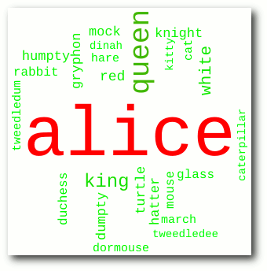Die Wortwolke zu „Alice“.
Die anderen drei Programme liegen alle sehr dicht beisammen. Da sie aber alle kleine Eigenheiten aufweisen, die eine unabhängige und aussagekräftige Analyse eines Textes nicht zulassen, haben wir uns entschieden, den dritten Platz unbesetzt zu lassen. Insgesamt danken wir aber allen fünf Teilnehmern für die Teilnahme, da ohne sie kein Wettbewerb zustande gekommen wäre.
Fazit
Der Wettbewerb hat gezeigt, dass es zum einen nicht so einfach ist, dass man als Teilnehmer wirklich alle Fälle behandelt, wie der Anwender später das Programm auch nutzen könnte. Zum anderen ist die Bewertung extrem schwer gewesen, da neben den eigentlichen Anforderungen vor allem die freiwilligen Zusatzanforderungen und Features eine starke Rolle spielten. Aus dem Grund wird der nächste Wettbewerb auch wieder einen spieltheoretischen Ansatz verfolgen, sodass am Ende des Wettbewerbs für jeden Teilnehmer eine Punktzahl errechnet wird, die klar angibt, welcher Platz erreicht wurde. Links[1] http://www.freiesmagazin.de/20120301-fuenfter-programmierwettbewerb-gestartet
[2] http://www.freiesmagazin.de/ftp/2012/freiesMagazin-2012-05-ergebnisse.tar.gz
[3] http://www.freiesmagazin.de/ftp/2012/freiesMagazin-2012-05-bewertung.ods
Diesen Artikel kommentieren
Zum Index
Leserbriefe
Für Leserbriefe steht unsere E-MailadresseLeserbriefe und Anmerkungen
Genderismus
-> Ich lese leider erst jetzt die Ausgabe 03/2012 von freiesMagazin und möchte mein Feedback zur dort im Editorial aufgeworfenen Frage über Genderismus geben. Dieses Thema wird leider immer wieder von einzelnen (aber sehr lauten) Agitatoren, oft in vorwurfsvollem Ton, vorgebracht. Es geht ganz offensichtlich nach der Devise „steter Tropfen höhlt den Stein“. Die vorgebrachte Forderung nach expliziter Nennung der weiblichen Teilmenge mit gleichzeitiger Behauptung, die normale Form würde nur die männliche Teilmenge ansprechen, ist sachlich unhaltbar, also falsch. In der deutschen Sprache fallen das Wort für einen männlichen Menschen und die allgemeine Form (zufällig) zusammen (z. B. „der Leser“), nur für einen weiblichen Menschen gibt es eine eigene Variante („die Leserin“). Obendrein wird bei der Mehrzahl in jedem Fall der weibliche Artikel „die“ verwendet (z. B. „die Leser“). Es stellt die deutsche Sprache also sowieso schon eine eindeutige Bevorzugung der weiblichen Teilmengen her. Die meist als Diskriminierung verunglimpfte normale Form ist also ganz im Gegenteil keine Diskriminierung von Frauen. In diesem Sinne bitte ich, auch weiterhin sämtliche Artikel in normalem Deutsch zu verfassen, und das auch von den Autoren zu verlangen. Es wäre sehr schade, wenn ihr die selbe – nur noch als Gesinnungsterrorismus zu bezeichnende – Schiene wie die Hochschülerschaft an der Uni Wien einschlägt, die nicht „gegenderte“ Artikel beinhart zensuriert.Johann Glaser <- Vielen Dank für Ihre Rückmeldung und Ihre Meinung zu dem Thema. Da wir das genauso sehen, müssen Sie nicht befürchten, demnächst von „Lesern und Leserinnen“ lesen zu müssen (auch wenn wir diese Ansprache ab und zu in der Tat benutzen, was aber weniger etwas mit pseudo-genderfreier Sprache zu tun hat).
Dominik Wagenführ
Kernel kompilieren nach Rezept
-> Ich lese freiesMagazin schon seit Jahren (ich glaub seit Erscheinen) und ich wollte zwar schon oft die Redakteure belobigen, aber da ich meistens kein Internet auf der Maschine habe, auf der ich das Magzin lese, hab ich meistens vergessen, es daheim nachzuholen. Aber an dich [Anmerkung der Redaktion: Gemeint ist der Autor des Kernel-Artikels Mathias Menzer] muss ich mal ein großes Lob loswerden. Super geschrieben, 'ne schöne Schritt-für-Schritt-Anleitung und obwohl ich schon seit fünf Jahren Linux auf dem Desktop einsetze, hab' ich mich noch nie getraut, 'was am Kernel zu machen. Und siehe da, jetzt hocke ich sogar vor meinem „eigenen“ Kernel, hat alles auf Anhieb geklappt! Danke!hypnotoad (Kommentar)
April-Ausgabe
-> Ich finde es sehr gut, dass die April-Ausgabe tatsächlich im April erscheint und nicht wie bei anderen Magazinen gefühlte zwei Monate früher. Und auch: danke für die Arbeit!bronsen (Kommentar) -> Wieder schöne und interessante Artikel dabei. Allerdings sehr programmier- bzw. techniklastig diesmal. Aber [das] ist natürlich abhängig von den Interessen Eurer Autoren, ab und an würde ich mir mehr Programmvorstellungen wünschen, so als Art „Programm des Monats“.
Andre (Kommentar) <- Ja, viele der Autoren (aber auch viele der Leser) stammen aus dem IT-affinen Umfeld und haben daher eher Interesse an solchen Themen. Gegen mehr Programmvorstellungen haben wir aber nichts einzuwenden und freuen uns, wenn auch nicht-technik-freudige Leser den Griff zur Tastatur wagen und einfach eines ihrer Lieblingsprogramme auf zwei, drei Seiten vorstellen. Wer Ideen hat, kann diese einfach unter
Dominik Wagenführ
Mobilausgabe als MOBI
-> Ist es eventuell auch möglich, statt oder zusätzlich das Format MOBI anzubieten? Z. B. der Kindle kann mit dem Format EPUB nichts anfangen …Sebroe (Kommentar) <- Nein, MOBI bieten wir nicht an, weil es sich um ein proprietäres Format von einem einzelnen Hersteller handelt. EPUB ist offen und herstellerunabhängig und wird von allen (bis auf einen) Ebook-Readern unterstützt. Mittels Calibre kann man am PC aber EPUB in MOBI konvertieren.
Dominik Wagenführ
Objektorientierte Programmierung
-> Also ich finde den Artikel beziehungsweise die ganze Artikelreihe sehr interessant. Ich freue mich auf folgende Artikel zur OOP. :-)Tim Holzschuh (Kommentar) -> Vielen Dank für diesen tollen zweiten Artikel zur OOP. Ich programmiere schon länger objektorientiert und hing schon oft an den angesprochenen konzeptionellen Schwierigkeiten fest. Der Artikel hat dort echt gut geholfen! Ich freue mich schon auf Teil 3.
Gast (Kommentar) Die Redaktion behält sich vor, Leserbriefe gegebenenfalls zu kürzen. Redaktionelle Ergänzungen finden sich in eckigen Klammern. Die Leserbriefe kommentieren
Zum Index
Veranstaltungskalender
| Messen | ||||
| Veranstaltung | Ort | Datum | Eintritt | Link |
| Linux Informationstag | Hanau | 12.05.2012 | frei | http://hulug.de/ |
| LUG Camp | Flensburg | 17.05.–20.05.2012 | – | http://www.lug-camp-2012.de/ |
| Sigint | Köln | 17.05.–21.05.2012 | – | http://sigint.ccc.de/ |
| LinuxTag | Berlin | 23.05.–26.05.2012 | 20 EUR | http://www.linuxtag.org/ |
| LiWoLi 2012 | Linz | 24.05.–26.05.2012 | frei | http://linuxwochen.at/ |
| RootCamp | Berlin | 25.05.–26.05.2012 | 15 EUR | http://rootcamp.mixxt.de/ |
| GPN12 | Karlsruhe | 07.06.–10.06.2012 | – | https://entropia.de/GPN12/ |
| 13. Libre Software Meeting | Genf | 07.07.–12.07.2012 | frei | http://2012.rmll.info/ |
Vorschau
freiesMagazin erscheint immer am ersten Sonntag eines Monats. Die Juni-Ausgabe wird voraussichtlich am 3. Juni unter anderem mit folgenden Themen veröffentlicht:- Objektorientierte Programmierung: Teil 4
- Trine 2
Konventionen
An einigen Stellen benutzen wir Sonderzeichen mit einer bestimmten Bedeutung. Diese sind hier zusammengefasst:| $: | Shell-Prompt |
| #: | Prompt einer Root-Shell – Ubuntu-Nutzer können hier auch einfach in einer normalen Shell ein sudo vor die Befehle setzen. |
| ~: | Abkürzung für das eigene Benutzerverzeichnis /home/BENUTZERNAME |
Impressum ISSN 1867-7991
freiesMagazin erscheint als PDF, EPUB und HTML einmal monatlich.Erscheinungsdatum: 6. Mai 2012
| Kontakt | |
| Postanschrift | freiesMagazin |
| c/o Dominik Wagenführ | |
| Beethovenstr. 9/1 | |
| 71277 Rutesheim | |
| Webpräsenz | http://www.freiesmagazin.de/ |
| Autoren dieser Ausgabe | |
| Mathias Menzer | Selbstgebacken 3: make, Der April im Kernelrückblick |
| Patrick Meyhöfer | Kollaboratives Schreiben mit LaTeX |
| Michael Niedermair | Rezension: Java 7 – Mehr als eine Insel |
| Jochen Schnelle | Rezension: PyQt und PySide |
| Uwe Steinmann | Dokumentenmanagement mit LetoDMS – Einrichten der Volltextsuche |
| Dominik Wagenführ | Objektorientierte Programmierung: Teil 3 – Einzigartige Registrierung, Astah – Kurzvorstellung des UML-Programms, Rezension: C++11 programmieren |
| Andreas Weber | Tine 2.0 – Installation und Grundkonfiguration |
| Redaktion | |
| Dominik Honnef | Matthias Sitte |
| Dominik Wagenführ (Verantwortlicher Redakteur) | |
| Satz und Layout | |
| Andreas Breitbach | Holger Dinkel |
| Dominik Frey | Tobias Kempfer |
| Nico Maikowski | Ralph Pavenstädt |
| Stefan Wiehler | |
| Korrektur | |
| Daniel Braun | Frank Brungräber |
| Vicki Ebeling | Stefan Fangmeier |
| Mathias Menzer | Christian Schnell |
| Karsten Schuldt | Toni Zimmer |
| Veranstaltungen | |
| Ronny Fischer | |
| Logo-Design | |
| Arne Weinberg (CC-BY-SA 3.0 Unported) |
Soweit nicht anders angegeben, stehen alle Artikel, Beiträge und Bilder in freiesMagazin unter der Creative-Commons-Lizenz CC-BY-SA 3.0 Unported. Das Copyright liegt beim jeweiligen Autor. freiesMagazin unterliegt als Gesamtwerk ebenso der Creative-Commons-Lizenz CC-BY-SA 3.0 Unported mit Ausnahme der Inhalte, die unter einer anderen Lizenz hierin veröffentlicht werden. Das Copyright liegt bei Dominik Wagenführ. Es wird erlaubt, das Werk/die Werke unter den Bestimmungen der Creative-Commons-Lizenz zu kopieren, zu verteilen und/oder zu modifizieren. Die xkcd-Comics stehen separat unter der Creative-Commons-Lizenz CC-BY-NC 2.5 Generic. Das Copyright liegt bei Randall Munroe.
File translated from TEX by TTH, version 3.89.
On 6 May 2012, 13:36.